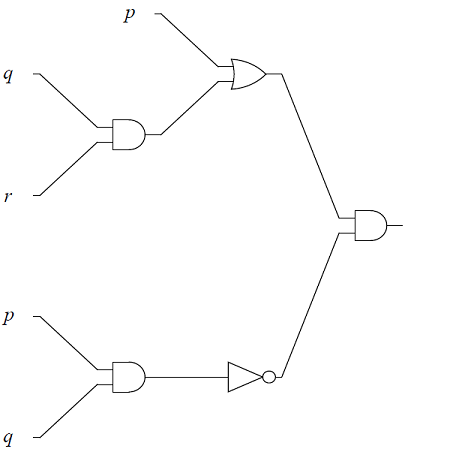
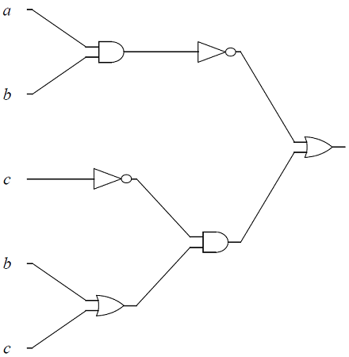
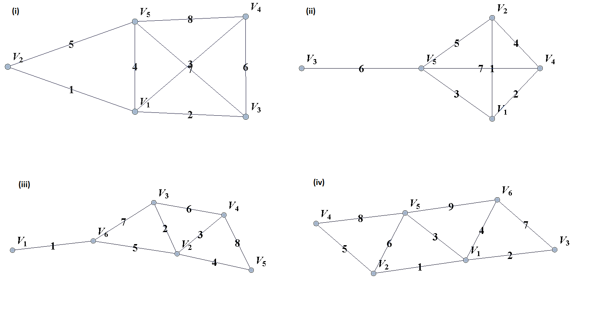
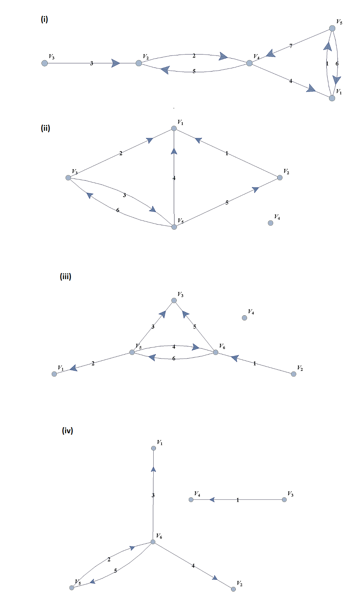
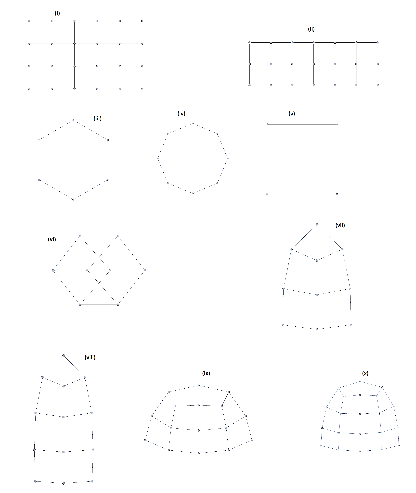
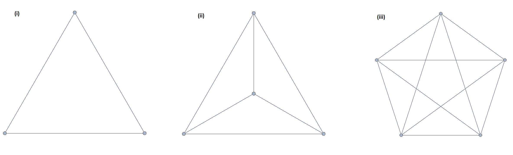
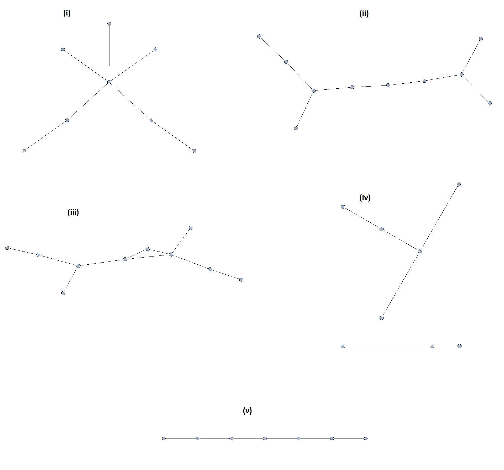
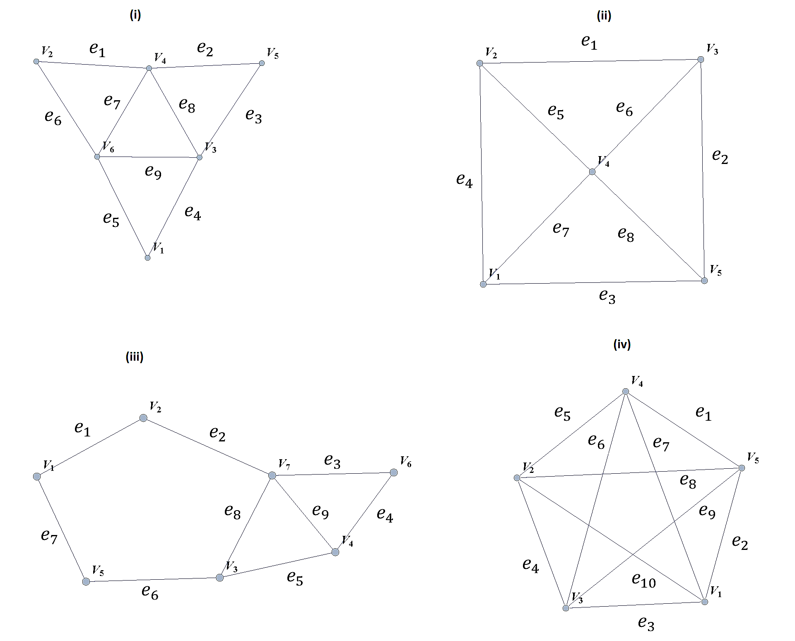

1. Introducing Discrete Mathematics
1.1. Course Objectives
At Georgia Gwinnett College, students who have successfully completed the Discrete Mathematics course will,
-
Reason mathematically and use mathematical language appropriately to demonstrate an understanding of comprehending and constructing mathematical arguments.
-
Perform combinatorial analysis to solve counting problems and analyze algorithms.
-
Demonstrate an understanding of discrete structures including sets, permutations, relations, graphs, and trees.
-
Demonstrate algorithmic thinking using mathematical creativity and critical thinking by specifying algorithms, verifying that algorithms work, and analyzing the time required to perform specific algorithms.
-
Use appropriate technology in the evaluation, analysis, and synthesis of information in problem-solving situations.
These course goals help structure the content of this class, which is aimed at students of information technology, computer science, and applied mathematics. The focus is on applying discrete math techniques from the two broad component areas of discrete math, namely combinatorics or enumerative techniques, and graph theory.
To that end, algorithmic thinking figures prominently in this course. Designing algorithms, particularly algorithms applied to networks, involves the use of graph theory methods. Implementing algorithms requires a careful understanding of logical structures, and usually a top down implementation approach, beginning with a specifications description, and then proceeding to a pseudocode implementation and finally a language dependent coding implementation. Moreover, analyzing the complexity of algorithms requires a knowledge of functions, the growth of functions, and counting techniques from combinatorial analysis. Similarly, mathematical induction and recursive definitions are used in a cohesive way to understand algorithms and the options in implementing these recursively versus iteratively.
The approach we take is one with an integrative incorporation of programming and algorithms into the course. The aim is to help improve students success with their broad programming curricula in courses like Intermediate and Advanced Programming.
1.2. Applications of Discrete Mathematics
Discrete mathematics is applied in many areas including the physical, engineering, and increasingly, the social sciences.
1.2.1. Applications to Applied Mathematics
Most problems that involve computational methods, need to be solved using computers. Rather than solve for the temperature map of an entire planar region, we solve for the temperature using a discrete set of mesh or grid of points on a representative subset of the planar region.
1.2.2. Applications to Information Technology and Computer Science
Discrete mathematics is needed for computer science as information and data is stored digitally. Digitally represented data is inherently discrete and is processed using discrete methods. For example a course grid discrete representation of the 2-d temperature distribution from the plate above could be:
\( \left(\begin{matrix}1&1&1\\2&4&8\\3&9&27\\4&16&64\\5&25&125\\\end{matrix}\right) \)
A voter registry may have voters in a database accessible from a list:
\( \left(\begin{matrix}John\ Smith\\Raheem\ Johnson\\.\\.\\.\\Sarah\ Muller\\\end{matrix}\right) \)
Which may need to be accessed and sorted, say geographically or alphabetically.
1.2.3. Applications to Data Science
Data science solutions to many problems use machine learning algorithms that are inherently discrete in nature. The information that needs processing is discrete, as are the basic problems in data science such as classification or clustering problems. In particular
-
Information consisting of data sets is represented using various data structures including graphical structures such as trees. Data science methods and algorithms involve procedures that manipulate these graphical structures to, for example, networks, classification trees, and decision trees.
-
Classification problems are discrete in nature. Classifying tumors as malignant or as benign involves trying to predict if a variable \(Y\) that we can think of as taking on two values either \(0\) or \(1\) either malignant or benign. There are various algorithms used in classification problems, such as the binary tumor classification, including methods from probability.
1.2.4. Applications to Engineering
Digital signal processing involves taking a video, audio, or other signal like temperature, pressure, position and velocity, which is continuous, digitizing it and then processing the digital signal mathematically.
1.2.5. Applications of Combinatorics
Combinatorics involves in part the study of counting the number of objects, satisfying a specified condition, from sets of variable size. Enumeration and combinatorics is important in many areas and examples including:
-
Calculating the number of steps an algorithm needs to process a data set of variable size \(𝑛\). This problem is called the computational cost of the algorithm as a function of \(𝑛\).
-
Calculating the possible number of codes in a cryptographic code system
1.2.6. Applications of Graph Theory
Graph theory, which is the study of structures constructed with nodes and the edges joining them, has applications in many fields including,
-
Chemistry - representing molecular bonding and structure
-
Information technology and computer science - ranking pages on the internet, with pages considered as nodes and page links as edges.
-
Industrial engineering and network optimization
-
Traffic routes (computer, internet, air, highway, subway systems) can be represented with stations as nodes and connections as edges.
-
Often we are interested in finding an optimal path in a network such as in the following example, finding the shortest tour over a series of towns on a map.
-
An example of the shortest tour problem, is shown below, using a software solution.
1.2.7. Applications of Probability and Statistics
Many probability assignments are based on counting and combinatorial methods.
-
If we assume that the likelihood of rain is the same on any day in the month of September, we might be interested in the probability that it rains on \(0\) days, it rains on exactly \(1\) day, exactly \(2\) days, etc. Such probability assignments are called discrete distributions, by contrast with continuous distributions like the bell curve.
-
Also probability and statistical techniques are often used in data science. The binary classification problem, of say classifying a tumor as malignant or benign, uses a statistical modeling technique, called regression, specifically logistic regression to determine the strength of the relationship between the independent variable, and dependent heterogeneity variable. In the tumor grading example the independent variable would be \((x_1,x_2 )\) (elastic heterogeneity, nonlinear elasticity), and the dependent variable would be \(Y\), classified as \(0\), or \(1\), (malignant or benign).
1.2.8. Applications to Social Sciences
Discrete mathematical techniques are important in understanding and analyzing social networks including social media networks.
The mathematics of voting is a thriving area of study, including mathematically analyzing the gerrymandering of congressional districts to favor and/or disfavor competing political parties. The following example illustrates some of the fundamental ideas related to gerrymandering.
1.3. Understanding Continuous and Discrete Sets
Sets of objects are discrete if there is a gap between each of the elements. Informally we mean that the elements are not connected continuously so that there the values of the set elements do not fall on a continuum. Practically speaking, sets are discrete if they can be counted.
|
A finite set is always discrete, since it can be counted. |
1.3.1. Examples of discrete sets
There are various types of discrete sets.
1.4. Exercises
-
Give the set of all relations from the set \(\{A, B \}\) to the set, \(\{0, 1, 2\}\), and explain why the set is discrete.
-
Consider rolling a six-sided die twice. The possible outcomes are of the form \((2, 3)\), corresponding to rolling a \(2\), followed by rolling a \(3\), or \((3,2)\), corresponding to rolling a \(3\), followed by a \(2\).
-
List all possible outcomes.
-
Explain why the set of all possible outcomes is a discrete set.
-
2. Introduction to Python
2.1. Programming Basics
Computers are programmable machines that process information by manipulating data. As the data can represent any real world information, and programs can be readily changed, computers are capable of solving many kinds of problems.
2.1.1. Programming Languages and Environments
There are many different programming languages for programmers to choose from. Each language has its own advantages and disadvantages, and new languages gain popularity while older ones slowly lose ground. In this book, we use the Python 3 programming language. It is popular in both academia and industry, and was designed with education in mind.
2.1.2. PythonTutor
PythonTutor is an environment for creating very short and simple Python programs and visualizing their execution. This enables beginners to visually see the data as it gets manipulated by the instructions.
2.1.3. Comments
Program files can contain source code and comments. Comments are not instructions for the computer to follow, but instead notes for programmers to read. Comments in Python start with a pound sign (#). Anything following the pound sign that is on the same line as the pound sign will not be executed. Often, at the very beginning of a program, comments are used to indicate the author and other information. Comments are also used to explain tricky sections of code or disable code from executing.
# This line is not Python code, it is a comment.
score = 9001 # over 9000!!!
# The next line of code is disabled because is starts with a #.
# score = 80002.2. Data Types
Programming is all about information processing. Information is categorized by data types. Four basic data types we will be considering are int, float, bool, and str. Int consists of integers, which are whole numbers written without a decimal point. This includes positive and negative whole numbers as well as zero. Float consists of floating-point numbers, which are numbers that are written with a decimal point. Bool consists of Boolean values (named after the mathematician George Boole). The only Boolean values are True and False. Str consists of strings, which are sequences of text characters including punctuation, symbols, and whitespace. Every value in Python has a corresponding data type. The table below shows examples of ints, floats, and strings.
| Data Type | Example Values |
|---|---|
int |
2, -2, 0, 834529 |
float |
3.14, -2.3333, 7.0 |
bool |
True, False |
str |
"Hello World!", 'Coconut', "0", '4 + 6' |
|
Strings and Quotation Marks
Strings are always surrounded by quotation marks. Python allows either single (') or double (") quotation marks. Some strings may look like numbers, but as long as they are surrounded by quotation marks, they are treated like text. |
2.3. Variables
Variables are (virtual) boxes that store values for reuse later. A variable has a name and a current value. Each variable can only hold one value at a time. Variables are assigned a value using the single equal sign (=). As Python executes one line at a time, variables come into existence on the line where they are first assigned. Each variable only stores the most recent value assigned to it.
|
Variable Names
Variables can have complex names like player1_score. In general, never start a variable name with a number and never use spaces in variable names. |
2.4. Operators and Expressions
|
Expression Evaluation
When Python encounters a line with an expression, it always evaluates the expression first. Consider the following line of code: Python first calculates the value of the expression to the right of the equal sign by using the standard order of operations starting inside the parentheses. The value given by the above expression is calculated to be equal to 14. Then, Python creates the variable x and assigns the value 14 to this variable. The variable only stores the calculated value, not the entire expression that generated that value. |
2.5. Strings and Printing
Besides creating and storing values in variables, we can also output text on a screen by calling the print() function.
2.6. If Statements
A block of code is a collection of lines of code that are either all executed (in sequential order) or all skipped. Blocks always start with a colon (:) on the previous line and require every line in the block to be indented the same amount using tabs or spaces. One way in which Python can execute or skip over a block involves using an if command and a Boolean expression. If the expression is true, then the block executes. Othewise, the block is skipped.
When you want to force exactly 1 of 2 blocks to execute (as opposed to just skipping a block), you can use the else command in addition to the if command. If the expression following the if command is true, then the first block executes. Otherwise, the second block executes.
In order to force exactly 1 of more than 2 blocks to execute, you can use the elif command in addition to the if and else commands. Each elif command must be followed by a Boolean expression. When using if and elif commands, each expression is checked in sequential order, and the block following the first true expression executes. If none of the expressions are true, the block following the else command is executed.
2.7. While Statements
Python can execute a block repeatedly using a while statement and a Boolean expression. The block repeats until the Boolean expression is false.
| The += operator increases the value of the variable written to the left of the operator by the value written to the right of the operator. |
2.8. Lists and Loops
When you need to consider many values at once, use a list.
When you want to consider every value in a list, use a for loop.
| The range() function returns a sequence of numbers. The sequence starts at the value given by the first argument, increments by 1, and ends at one less than the value given by the second argument. For example, range(2,5) returns 2,3,4. If only one argument is given, that argument is considered the second argument and the first argument is set to 0 by default. For example, range(4) returns 0,1,2,3. |
2.9. List Appending and Slicing
We can append to lists with the concatenation operator (+). We can also slice a list using the bracket notation and two indices separated by a colon (:). The first index specifies the starting point of the slice while the second index specifies the stopping point of the slice + 1.
2.10. Defining Custom Functions
In the examples above we have called several functions like print() and len(). You can define your own functions using def. A function definition includes zero or more parameter variables. The values of those parameter variables are referred to as the arguments of the function.
2.11. Exercises
-
Given the following Python code, what is the value and data type of each variable?
a = 6 + 8 large = a // 4 b = 22 // 3 c = 22 % 3 d = False or True e = True and False sheep = (True or (b > 10)) -
Given the following Python code, determine the printed output.
print("Hello World!") a = "The answer is" b = 6 * 7 print(a, b) print(False, "Hobbit", 1, "Ring") -
For the following code, determine the value of the variable letter when the score is 92, 84 and 59.
score = #an interger between 0 and 100 if score >= 90: letter = 'A' elif score >= 80: letter = 'B' elif score >= 70: letter = 'C' elif score >= 60: letter = 'D' else: letter = 'F' -
For the following code, determine the value of the variable ans for each case given below.
if outside == False: if (n >= 2 and n <= 20): return ans = True else: return ans = False else: if (n <= 2 or n >= 20): return ans = True else: return ans = False-
n = 3, outside = False
-
n = 15, outside = False
-
n = 15, outside = True
-
n = 12, outside = True
-
-
What will this code print out?
while count > 0: print("Welcome") count -= 1 -
Write Python code to satisfy the following conditions. Then test your code on the values of the variables given.
-
Given an int n, return the absolute diffrence between n and 10, except return triple the absolute dfference if n is over 10. It should return 1 when n=9. It should return 33 when n=21. What will the code return when n=7 or n=35?
-
We have a loud talking robot. The "hour" parameter is the current hour time in the range 0 to 23. We are in trouble if the robot is talking and the hour is before 6 or after 21. Return True if we are in trouble. It should return True when the robot is talking and the hour is 8. It should return False when the robot is not talking and the hour is 8. What does it return if the robot is talking and the hour is 9?
-
-
What will the following code print out?
numbers = [1, 3, 5, 7, 10] sq = 0 for val in numbers: sq = val * val print(sq) -
What will the following code print out?
for i in range(1, 20, 2): print(i) -
Use the following definition of the function front3() to find the output of the program for the list [1, 3, 5, 7].
def front3(nums): i = 0 while (i < len(nums) and i < 5): if nums[i] == 3: return True i += 1 return False -
Write a function that takes, as input, two lists of integers, a and b, both of length 3, and returns, as output, a new list of length 2 containing the last elements of a and b. For example, if a = [1, 2, 3] and b = [10, 20, 30], then the function should return the list [3, 30].
3. Logic
3.1. Propositional Logic
A proposition is a sentence that declares a fact that is either True or False.
Propositional logic consists of a set of formal rules for combining propositions in order to derive new propositions.
In Python, we can use boolean variables (typically \(p\) and \(q\)) to represent propositions and define functions for each propositional rule. Each rule can be implemented using the boolean operators (and, or, not) discussed in the section on operators and expressions.
A truth table is a method of showing truth values of compound propositions using the truth values of its components. It is typically created with rows representing possible truth values and columns representing the propositions.
3.1.1. Negation
The negation is a statement that has the opposite truth value. The negation of a proposition \(p\), denoted by \(\neg p\), is the proposition "It is not the case, that \(p\)".
For example, the negation of the proposition "Today is Friday." would be "It is not the case that, today is Friday." or more succinctly "Today is not Friday."
| \(p\) | \(\neg p\) |
|---|---|
True |
False |
False |
True |
3.1.2. Conjunction
"I am a rock and I am an island."
Let \(p\) and \(q\) be propositions. The conjunction of \(p\) and \(q\), denoted in mathematics by \(p \land q\), is True when both \(p\) and \(q\) are True, False otherwise.
| \(p\) | \(q\) | \(p \land q\) |
|---|---|---|
True |
True |
True |
True |
False |
False |
False |
True |
False |
False |
False |
False |
3.1.3. Disjunction
"She studied hard or she is extremely bright."
Let \(p\) and \(q\) be propositions. The disjunction of \(p\) and \(q\), denoted in mathematics by \(p \lor q\), is True when at least one of \(p\) and \(q\) are True, False otherwise.
| \(p\) | \(q\) | \(p \lor q\) |
|---|---|---|
True |
True |
True |
True |
False |
True |
False |
True |
True |
False |
False |
False |
3.1.4. Exclusive Disjunction
"Take either 2 Advil or 2 Tylenol."
Let \(p\) and \(q\) be propositions. The exclusive disjunction of \(p\) and \(q\) (also known as xor), denoted in mathematics by \(p \oplus q\), is True when exactly one of \(p\) and \(q\) are True, False otherwise.
| \(p\) | \(q\) | \(p \oplus q\) |
|---|---|---|
True |
True |
False |
True |
False |
True |
False |
True |
True |
False |
False |
False |
|
Exclusive disjunction can be thought of as one or the other, but not both. |
3.1.5. Implication
"If you get a 100 on the final exam, then you earn an A in the class."
Let \(p\) and \(q\) be propositions. The implication of \(p\) and \(q\), denoted in mathematics by \(p \implies q\), is short hand for the statement "if p then q". As such, implication requires \(q\) to be True whenever \(p\) is True. If \(p\) is not True, then \(q\) can be any value. In other words, implication fails (is False) when \(p\) is True and \(q\) is False. Note, this is different from "p if and only if q".
| \(p\) | \(q\) | \(p \implies q\) |
|---|---|---|
True |
True |
True |
True |
False |
False |
False |
True |
True |
False |
False |
True |
|
Implication can be considered a "contract" which fails only when the conditions are met and the results are not fulfilled. |
3.1.6. Converse, Contrapositive and Inverse of an Implication
We can form new compound propositions from the implication, \(p \implies q\). They are
-
The converse: \(q \implies p\)
-
The contrapositive: \( \neg q \implies \neg p\)
-
The inverse \( \neg p \implies \neg q\)
The truth tables for these new propositions are shown in the table.
| \(p\) | \(q\) | \(p \implies q\) (conditional) | \(q \implies p \) (converse) | \( \neg q \implies \neg p\) (contrapositive) | \( \neg p \implies \neg q\) (inverse) |
|---|---|---|---|---|---|
True |
True |
True |
True |
True |
True |
True |
False |
False |
True |
False |
True |
False |
True |
True |
False |
True |
False |
False |
False |
True |
True |
True |
True |
In the section proposition equivalences we will explain why the truth table shows that the conditional \(p \implies q\) and contrapositive \( \neg q \implies \neg p\) are logically equivalent, and why the converse \(q \implies p\) and inverse \( \neg p \implies \neg q\) are logically equivalent.
We illustrate these ideas with an example.
3.1.7. Bi-Implication
"It is raining outside if and only if it is a cloudy day."
Let \(p\) and \(q\) be propositions. The bi-implication of \(p\) and \(q\), denoted in mathematics by \(p \iff q\), is short hand for the statement "p if and only if q". As such, bi-implication requires \(q\) to be True only when \(p\) is True. In other words, bi-implication fails (is False) when \(p\) is True and \(q\) is False or when \(p\) is False and \(q\) is True.
| \(p\) | \(q\) | \(p \iff q\) |
|---|---|---|
True |
True |
True |
True |
False |
False |
False |
True |
False |
False |
False |
True |
|
Bi-implication is True if the propositions have the same truth value and False otherwise. |
It is important to contrast implication with bi-implication. Consider the implication example "If you get a 100 on the final exam, then you earn an A in the class." This means that when you get a 100 on the final you also get an A in the class.
As a bi-implication it would say "You get a 100 on the final exam if and only if you earn an A in the class." This becomes a two-way contract where you can earn an A in the class by getting a 100 on the final, but if you do not get a 100 on the final you will not earn an A.
3.1.8. Compound Propositions
To find truth values of compound propositions, it is useful to break them up into smaller parts.
When creating your own truth table it is crucial to be systematic about ensuring you have all possible truth values for each of the simple propositions. Each simple proposition has two possible truth values, so the number of rows in the table should be \(2^n\) where \(n\) is the number of propositions. You should also consider breaking complex propositions into smaller pieces.
Logical Translations
A long time ago philosophers discovered we could put our thoughts into symbols and more easily follow lines of reasoning. This was an important step in the eventual development of our modern technological society and our use of digital computers. Before computers can work, we have to put our thoughts into them.
BUT, the English language is difficult and we use many different phrases to represent the same logical statements. Translating statements from English sentences to symbols and back is a skill that needs lots of practice.
3.2. Proposition Equivalences
Two propositions are considered logically equivalent (or simply equivalent) if they have the same truth values in every instance. It is often easiest to see this by constructing a truth table for the two propositions and comparing.
3.2.1. De Morgan’s Laws
Two important logical equivalences are De Morgan’s Law. These describe how we "distribute" the negation across the and and or operators.
| We use the symbol \(\equiv\) to denote two statements which are logically equivalent. |
3.2.2. Tautologies, Contradictions and Contingencies
A proposition is a tautology if its truth value is always True.
A proposition is a contradiction if its truth value is always False.
A proposition that is neither a tautology nor a contradiction is said to be a contingency.
3.3. Predicates and Quantifiers
3.3.1. Predicates
A predicate is a statement involving a variable.
Predicates are denoted as \(P(x)\) or \(Q(x,y)\) where \(P\) and \(Q\) represent the statements and \(x\) and \(y\) represent the possible values. After a value is assigned to each variable, the predicate becomes a proposition which has a truth value.
3.3.2. Quantifiers
Consider the statements
-
For all integers \(x\), \(x^2\geq 0\).
-
Some student in the class has a birthday in July.
Each of these statements considers a proposition over an entire population or set, called the domain, and quantifies how many elements (or people) in the set satisfy the proposition. To represent this idea, we use two main quantifiers, the universal quantifier and the existential quantifier.
The Universal Quantifier, \(\forall\), represents the statement "for all", "for every", "for each". When it comes before a statement, it means that statement is true for all values in the domain.
The Existential Quantifier, \(\exists\), represents the statement "there exists", "for some", "at least one". When it comes before a statement, it means the statement is true for at least one value in the domain.
Recall the previous example statements:
-
For all integers \(x\), \(x^2 \geq 0\).
Let \(P(x)\) be the predicate "\(x^2 \geq 0\)". Then we write the statement as \(\forall x P(x)\), where the domain is the set of all integers. This quantified statement will be true since anytime you square a nonzero integer it is positive and \(0^2=0\).
-
Some student in the class has a birthday in July.
Let \(Q(s)\) be the predicate "student \(s\) has a birthday in July". Then we write the statement as \(\exists s Q(s)\), where the domain is the set of all students in the class. This statement will be true as long as at least one student in the class has a birthday in July. It will be false, otherwise.
3.3.3. Negation of Quantifiers
It is important to consider the negation of a quantified expression.
-
"Every student in this class has taken Programming Fundamentals."
This is a universally quantified statement and can be expressed as \(\forall x P(x)\) where \(P(x)\) is the statement "\(x\) has taken Programming Fundamentals" and the domain consists of all the students in this class. The negation of the statement would be "It is not true that every student in this has taken Programming Fundamentals." Equivalently,
-
"There is a student in this class who has NOT taken Programming Fundamentals."
This is an existentially quantified statement expressed as \(\exists x \neg P(x)\).
This demonstrates that the negation of a universally quantified statement is an existential statement. In symbols, we have \(\neg \forall x P(x)\equiv \exists x \neg P(x)\).
Similarly, the negation of an existential statement is a universal statement. \(\neg \exists x P(x) \equiv \forall x \neg P(x)\).
The predicate of a quantified statement could be a compound statement. For instance,
-
Some dogs are big and fluffy.
This is written as \(\exists x (B(x) \land F(x))\) where \(B(x)\) is the proposition "\(x\) is big." and \(F(x)\) is the proposition "\(x\) is fluffy." and the domain is dogs. Negating this statement would give
\(\neg \exists x (B(x) \land F(x)) \equiv \forall x \neg (B(x) \land F(x)) \equiv \forall x (\neg B(x) \lor \neg F(x))\)
In words,
-
All dogs are not big or not fluffy.
3.3.4. Nested Quantifiers
There are times it will take more than one quantifier to express a statement.
-
For all integers \(x\), there exists an integer \(y\), such that \(x+y=0\).
This statement contains both a universal and an existential quantifier. \(\forall x \exists y S(x,y)\) where \(x\) and \(y\) are integers and \(S(x,y)\) is the proposition \(x+y=0\). This statement means, if you have any integer \(x\) (for instance \(x=5\)) then you can find an integer \(y\) (for instance \(y=-5\)) such that \(x+y=0\).
The order of the quantifiers matters. \(\exists x \forall y S(x,y)\) would be
-
There exists an integer \(x\), such that for all integers \(y\), \(x+y=0\).
Note that in this statement you find an integer \(x\) so that when you add any integer \(y\) to it you always get 0.
The first statement, for all integers \(x\), there exists an integer \(y\) such that \(x+y=0\), is true. For any integer \(x\) you could choose \(y=-x\) and \(x+y=x+(-x)=0\). While the second statement, there exists an integer \(x\), such that for all integers \(y\), \(x+y=0\), is false.
To negate nested quantifiers, repeatedly apply De Morgan’s Laws of negating a quantifier and a predicate.
Namely, \(\neg \forall x P(x) \equiv \exists x \neg P(x)\) and \(\neg \exists x P(x) \equiv \forall x \neg P(x)\).
3.4. Applications of Logic
In this section we consider two applications of logic to information technology and computer science. The first involves bitwise operations, and the second designing and analyzing logic circuits.
3.4.1. Bitwise operations
A bitwise operation is a Boolean operation that operates on the individual bits (\(0s\), or \(1s\)) of the operand(s) and are summarized
We summarize the truth tables for the bitwise boolean operators.
| \(p\) | \(q\) | \(AND\) & | \( \ OR\ | \) | \(XOR\) \({}^{\wedge}\) | \(IF\) \(\Rightarrow\) | \(IFF\) \(\Leftrightarrow\) |
|---|---|---|---|---|---|---|
1 |
1 |
1 |
1 |
0 |
1 |
1 |
1 |
0 |
0 |
1 |
1 |
0 |
0 |
0 |
1 |
0 |
1 |
1 |
1 |
0 |
0 |
0 |
0 |
0 |
0 |
1 |
1 |
3.4.2. Logic Circuits
Logic circuits are important in designing the arithmetic and logic units of a computer processor. Consider the problem of adding two \(8\)-bit numbers in binary. In binary \(0+0=0\), and \(1+0=0+1=1\), but, as in decimal addition, in binary \(1+1=2\), which in binary will be a sum of \(0\) and a carry of \(1\) to the next significant column on the left. Thinking then of adding a specific column of two binary digits, say \(A\) and \(B\), involves as input the digits \(A, B\) and the carry in from the previous column say \(C_{in}\). The output will be the sum \(S\) and the carry out to the next column, say \(C_{out}\). These are the basic components of what is called a binary adder.
The logic table for binary addition based on the digital inputs \(A, B, C_{in}\), and digital outputs \(S\) and \(C_{out}\) is summarized in the table.
| \(A\) | \(B\) | \(C_{in}\) | \(\mathbf{S}\) | \(\mathbf{C_{out}}\) |
|---|---|---|---|---|
1 |
1 |
1 |
\(\mathbf{1}\) |
\(\mathbf{1}\) |
1 |
1 |
0 |
\(\mathbf{0}\) |
\(\mathbf{1}\) |
1 |
0 |
1 |
\(\mathbf{0}\) |
\(\mathbf{1}\) |
1 |
0 |
0 |
\(\mathbf{1}\) |
\(\mathbf{0}\) |
0 |
1 |
1 |
\(\mathbf{0}\) |
\(\mathbf{1}\) |
0 |
1 |
0 |
\(\mathbf{1}\) |
\(\mathbf{0}\) |
0 |
0 |
1 |
\(\mathbf{1}\) |
\(\mathbf{0}\) |
0 |
0 |
0 |
\(\mathbf{0}\) |
\(\mathbf{0}\) |
It can be shown that the logic for the outputs \(S\), and \(C_{out}\) is given by the following propositions \[ C_{out}=(A\land B)\lor \left(B\land C_{in}\right)\lor \left(A\land C_{in}\right)\] \[S=\left(\sim A\land \sim B\land C_{in}\right)\lor \left(\sim A\land B\land \sim C_{in}\right)\lor \left(A\land \sim B\land \sim C_{in}\right)\lor \left(A\land B\land C_{in}\right) \]
Implementing these logical outputs based on the inputs \((A,B, C_{in})\), is through the use of electronic circuits called logic gates.
The basic logic gates, are the Inverter or Not gate, the And gate, the Or gate and the Xor gate. The graphical representation for each is shown below.
We end this section by first analyzing logic circuits to give their outputs in terms of their input variables, and then, constructing logic circuits based on logical statements.
In the next two examples, we design logic circuits based on logical propositions. The idea is to work backward using order of operations from the right to the left.
3.5. Exercises
-
Which of these statements are propositions? Explain your reasoning
-
Is Atlanta the capital of Georgia?
-
All birds fly
-
\(2\ \times\ \ 3\ =\ 5\)
-
\(5\ +\ 7\ =\ 7+5\)
-
\(x\ +\ 2\ =\ 11\)
-
Answer this question.
-
The rain in Spain
-
-
Construct truth tables for,
-
\(a\vee b\Rightarrow\lnot b\)
-
\((a\vee\lnot b)\ \Leftrightarrow\ a\)
-
\((a\Rightarrow b)\ \bigwedge\ (b\ \bigwedge\ \lnot c)\)
-
\((a\ \bigvee\ b)\ \Rightarrow\ (\ \lnot c\ \bigvee\ a)\)
-
\((a\ \bigvee\ b)\ \bigwedge\ (c\ \bigvee\lnot d\ )\)
-
\((\lnot c\ \bigwedge\ \ b)\ \bigvee\ \ (a\Rightarrow\ \lnot d\ )\)
-
-
Using truth tables, determine if each of the following is a tautology, contradiction, or neither (conditional)
-
\(\neg ((a\lor b)\lor (\neg a\land \neg b))\)
-
\(\left(\left(a\vee b\right)\land\lnot a\right)\Rightarrow b\)
-
\(\left(\left(a\vee b\right)\land a\right)\Rightarrow b\)
-
\(p\land r)\lor (\neg p\land \neg r)\)
-
\(\neg ((p\lor q)\lor (\neg p\land (\neg q\lor r)))\)
-
\(\neg (p\land q)\lor (q\lor r)\)
-
-
Using truth tables determine which of the following are equivalent
-
\(\left(p\Rightarrow q\right)\Rightarrow r\),
\(\left(p\land\lnot q\right)\vee r,\) and
\(\left(p\land\lnot q\right)\land r\)
-
\((a\lor b)\land c,\)
\((c\land a)\lor (c\land b),\) and
\(\neg ((\neg a\land \neg b)\lor \neg c)\)
-
-
Let \(C(x)\) be the statement "\(x\) has visited Canada." where the domain consists of the students at GGC. Express each of the quantifications in English.
-
\(\exists x C(x)\)
-
\(\forall x C(x)\)
-
How would you determine whether each of these statements is true or false?
-
-
Determine the truth value of each of these statements if the domain for all variables, \(m , n\) is the set of all integers, \(\mathbb{Z}\), explaining your reasoning.
-
\(\forall n:\left(n^2\geq 1\right)\)
-
\(\forall n:\left(n^2\geq 0\right)\)
-
\(\ \exists\ n:(n^2=3)\)
-
\(\ \exists\ m\forall\ n:(m+n=n-m)\)
-
\(\forall\ n\exists\ m:\ (n\cdot\ m=m)\)
-
\(\ \exists\ n\forall\ m:\ (n\cdot\ m=m)\)
-
\(\ \exists\ n\forall\ m:\ (n\cdot\ m=n)\)
-
-
Consider each of the compound propositions. (i) Translate each using logical symbols and letters, stating what each letter represents, (ii) Negate each using plain English sentences, and (iii) Translate the negated statements using logical symbols and quantifiers.
-
If it snows today, then I will go skiing tomorrow.
-
Mei walks or takes the bus to class.
-
Every person in this class understands mathematical induction.
-
In every mathematics class there is some student who falls asleep during lectures.
-
There is a building on the campus of some college in the United states in which every room is painted white.
-
-
Let \(p\), be the proposition ”My bicycle needs a tire replaced,” \(q\), be the proposition ”I will go cycling”, and, \(r\), be the proposition ”Rain is in the forecast.”
-
Express each of these compound propositions using plain English sentences.
-
\(\neg p\vee q\)
-
\(\neg p\Rightarrow \neg q\)
-
\((\neg p\wedge r)\Rightarrow q\)
-
\((\neg p\wedge r)\Rightarrow q\)
-
\((\neg p\wedge q)\vee r\)
-
-
Write these compound propositions using \(p\), \(q\) and, \(r\) and logical connectives (including negation).
-
If my bicycle tire does not replacement I will go cycling.
-
My bicycle tire does not replacement, there is rain in the forecast but I will go cycling
-
Whenever there is rain in the forecast, I do not go cycling.
-
If there is rain in the forecast or my tire needs replacement I will not go cycling.
-
Rain is not forecast whenever I go cycling.
-
Rain is not forecast and my tire does not need replacement whenever I go cycling.
-
-
-
Design logic circuits with the following output
-
\((p\lor (q\land \neg r))\lor \neg (p\land q)\)
-
\((p\lor (q\land r))\land \neg (p\land q)\)
-
-
Consider the predicate \(Q(x,y): x\ \cdot\ y=5\), where the domain of \(x\) and \(y\) is all positive real numbers \(\mathbb{R}^+\), or \(x,\ y\ >0\). Determine the true value of the following, an explain your reasoning.
-
\(Q(1,5)\)
-
\(Q\left(2,\frac{5}{2}\right)\)
-
\(\exists\ y,\ Q\left(7,y\right)\)
-
\(\ \forall\ y,\ Q\left(7,y\right)\)
-
\(\exists\ x\ \forall\ y,\ Q\left(x,y\right)\)
-
\(\ \forall\ \ x\ \exists\ \ y,\ Q\left(x,y\right)\)
-
-
Consider the predicate \(R(x,y):\ 2x+y=0\), where the domain of \(x\) and \(y\) is all rational numbers, \(\mathbb{Q}\). Determine the true value of the following, an explain your reasoning.
-
\(R(0,0)\)
-
\(R(2,-1)\)
-
\(R\left(\frac{1}{5},-\frac{2}{5}\right)\)
-
\(\exists y,\ R\left(0.2,y\right)\)
-
\(\ \forall y,\ R\left(7,y\right)\)
-
\(\exists\ x\forall\ y,\ R\left(x,y\right)\)
-
\(\ \forall\ x\ \exists\ y,\ R\left(x,y\right)\)
-
-
Calculate the bitwise \(AND\), the bitwise \(OR\), and the bitwise \(XOR\) of the following pairs of bytes, or sequence of bytes
-
\(01111111\) and \(11101001\)
-
\(1110010111111010\) and \(0101110101100011\)
-
-
Give the output for each of the logic circuits in terms of the input variables,
-
The logic circuit, with input variables, \(p, q\), \(r\).
 -
The logic circuit, with input variables, \(a, b\), \(c\).

-
-
Design a logic circuit for \(r\land (p\lor (r\land \neg q))\).
4. Set Theory
4.1. Sets
A set is an unordered collection of objects, called elements or members. A set is said to contain its elements. If \(x\) is an element of the set \(A,\) then we write \(x \in A\). If \(x\) is not an element of the set \(A\), then we write \(x \not\in A\).
For example, if \(S\) is the set of states in the United States, then New York is an element of \(S\) and Ontario is not an element of \(S.\) If \(E\) is the set of even integers, then \(2 \in E\) and \(3 \not\in E.\)
There are several different ways to describe a set. One way of describing a set is known as the roster method. This is where we list all the elements of a set between curly braces. For example, \(\{a,b,c\}\) is the set whose elements are \(a,\) \(b,\) and \(c.\)
In addition to int (integer), float and string, mentioned in the section on data types, one can build sets in Python using curly braces. Set data types are unordered and ignore duplicate elements.
Another way of describing a set is the use of set builder notation. We write a set as \[\{x \in D : P(x)\}.\]This is the set of all elements \(x\) from a domain \(D\) that satisfy the predicate \(P(x).\)
|
When there are too many elements in a set for us to be able to list each one, we often use ellipses (\(\dots\)) when the pattern is obvious. For example, we have \[\mathbb{Z} = \{\dots,-3,-2,-1,0,1,2,3,\dots\}.\] |
We make frequent use of special sets and these are denoted with special symbols.
Other special sets will be defined as needed.
4.1.1. Empty Set
Consider the following set described using set builder notation: \[\{x \in \mathbb{Z} : x^2 = 2\}.\]This is the set of all integers whose square is equal to 2. However, no such integers exist. Therefore, using the roster method to describe it, this is the set \(\{ \}.\)
We call the set \(\{ \}\) the empty set and denote this set by \(\emptyset.\) The empty set has no elements.
|
It is important to note that \(\{\}\) and \(\emptyset\) are both ways to write the empty set. However, the set \(\{ \emptyset \}\) is not the empty set; rather, it is a set which contains a single element. The single element conained in the set \(\{ \emptyset \}\) is the empty set. In general, the set \(A\) is not the same as the set \(\{ A \}.\) |
4.1.2. Cardinality
Suppose that a set \(A\) contains a finite number of distinct elements. We refer to the number of elements of \(A\) as the cardinality of \(A\) and denote this by \(|A|\). If \(A\) contains an infinite number of distinct elements, we say that \(A\) has infinite cardinality and we write \(|A| = \infty.\)
Thus, we see that \(|\{0,1,2\}| = 3\) and \(|\mathbb{Z}| = \infty.\) Additionally, note that \(|\emptyset| = 0.\)
4.1.3. Equality
We say that two sets are equal if and only if they contain the same elements. In other words, \(A\) and \(B\) are equal sets if and only if \[\forall x (x \in A \iff x \in B).\]When \(A\) and \(B\) are equal sets, we write \(A = B\). When \(A\) and \(B\) are not equal sets, we write \(A \neq B\).
The sets \(\{2,3,5\}\) and \(\{5,2,3\}\) are equal sets, since they contain the same elements. The order in which the elements of a set are listed does not matter. Additionally, it does not matter whether elements are repeated. Thus, the sets \(\{a,b,c\}\) and \(\{b,b,a,c,b,a,c,c,c\}\) are equal sets as well.
4.1.4. Subsets
We say that a set \(A\) is a subset of a set \(B\) if and only if every element of \(A\) is an element of \(B.\) In other words, \(A\) is a subset of \(B\) if and only if \[\forall x (x \in A \implies x \in B).\]When \(A\) is a subset of \(B,\) we write \(A \subseteq B\). When \(A\) is not a subset of \(B,\) we write \(A \not\subseteq B\).
In order to show that \(A\) is a subset of \(B,\) we must show that, whenever \(x \in A,\) it is also the case that \(x \in B.\) In order to show that \(A\) is not a subset of \(B,\) we must find a single \(x\) such that \(x \in A\) but \(x \not \in B.\)
Note that, for any set \(A,\) it is always the case that \(\emptyset \subseteq A\) and \(A \subseteq A.\) For any sets \(A\) and \(B,\) if \(A \subseteq B\) and \(B \subseteq A,\) then \(A = B.\)
If \(A \subseteq B\) and \(B\) contains at least one element that is not in A, then we say \(A\) is a proper subset of \(B\), denoted \(A \subset B\).
4.1.5. Power Set
Given a set \(A,\) we refer to the power set of \(A\) as the set of all subsets of \(A.\) The power set of \(A\) is denoted by \(\mathcal{P}(A).\)
|
\(\mathcal{P}(A)\) is a set whose elements are all sets. |
If we let \(A = \{a,b,c\},\) we see that \[\mathcal{P}(A) = \{\emptyset, \{ a \}, \{ b \}, \{ c \}, \{a,b\}, \{a,c\}, \{b,c\}, \{a,b,c\}\}.\] The empty set only has the empty set as a subset. Thus, we see that \[\mathcal{P}(\emptyset) = \{\emptyset\}.\]We can also take the power set of a power set. For example, we have the following:
| \[\begin{split} \mathcal{P}(\{ 1 \}) &= \{\emptyset, \{ 1 \}\},\\ \mathcal{P}(\mathcal{P}(\{ 1 \}) &= \mathcal{P}(\{\emptyset, \{ 1 \})\\ &= \{\emptyset, \{\emptyset\}, \{ \{ 1 \} \}, \{\emptyset, \{ 1 \}\}\}. \end{split}\] |
4.2. Set Operations
We can obtain new sets by performing operations on other sets. When performing set operations, it is often helpful to consider all of our sets as subsets of a universal set \(U.\) We can think of the universal set as the set of all of the objects under consideration.
We can represent set operations visually using Venn diagrams, named after the English mathematician John Venn. A Venn diagram will consist of a rectangle, which represents the universal set, and one or more circles, which represent the sets under consideration. We will then shade in the regions of the diagram that correspond to one or more set operations.
4.2.1. Union
The union of the sets \(A\) and \(B\) is the set containing those elements that are in \(A\) or \(B\) or both, and is denoted by \(A \cup B\). More formally, \[A \cup B = \{x \in U : x \in A \lor x \in B\}.\]
We have the following Venn Diagram for \(A \cup B\):
Note that, for any sets \(A\) and \(B,\) \[A \cup B = B \cup A.\]
4.2.2. Intersection
The intersection of the sets \(A\) and \(B\) is the set containing those elements that are in \(A\) and \(B\) and is denoted by \(A \cap B\). More formally, \[A \cap B = \{x \in U : x \in A \land x \in B\}.\]
We have the following Venn Diagram for \(A \cap B\):
Note that, for any sets \(A\) and \(B,\) \[A \cap B = B \cap A.\] If it is the case that \(A \cap B = \emptyset,\) then we say that \(A\) and \(B\) are disjoint. In other words, two sets are disjoint if and only if they contain no elements in common.
4.2.3. Difference
The difference of the sets \(A\) and \(B\) is the set containing those elements that are in \(A\) but not in \(B\) and is denoted by \(A \setminus B\). Set difference is also denoted by \(A - B\). More formally, \[A \setminus B = \{x \in U: x \in A \land x \not\in B\}.\]
We have the following Venn Diagram for \(A \setminus B\):

Note that, for any sets \(A\) and \(B,\) if \(A = B,\) then \(A \setminus B = \emptyset\) and \(B \setminus A = \emptyset\). Thus, when \(A = B,\) \[A\setminus B = B \setminus A.\] However, if \(A \neq B,\) then \[A \setminus B \neq B \setminus A.\]
4.2.4. Complement
The complement of a set \(A\) is the set of all elements in the universal set \(U\) which are not elements of \(A\) and is denoted by \(\overline{A}.\) More formally, \[\overline{A} = \{x \in U: x \not\in A\}.\]
We have the following Venn Diagram for \(\overline{A}\):
For any set \(A,\) \[\overline{A} = U \setminus A.\]
4.2.5. Multiple Set Operations
We can also perform more than one set operation on a collection of sets. For example, let \(A,\) \(B,\) and \(C\) be sets and consider the following set: \[(A \setminus B) \cup (C \setminus B).\]This is the set that is obtained by taking the union of the sets \(A \setminus B\) and \(C \setminus B.\) We have \[(A \setminus B) \cup (B \setminus A) = \{x \in U: (x \in A \land x \not\in B) \lor (x \in C \land x \not\in B)\}.\]
We have the following Venn Diagram for \((A \setminus B) \cup (C \setminus B)\):
Video Example 1
Video Example 2
4.2.6. The Cartesian Product
The Cartesian product of two sets \(A\) and \(B\) is the set of ordered pairs defined by,
\( A\times B=\{(a,b)|a\in A\wedge b\in B)\}\),
|
Because Cartesian products are created using ordered pairs, \(B \times C\), is, in general, different from \(C \times B\). |
|
If the cardinality of set \(|A|=a\), and the cardinality of set \(|B|=b\), then the cardinality of the Cartesian product is \(|A × B|=ab\) |
|
The Cartesian coordinate systems are natural sets that are naturally Cartesian products. The two-dimensional plane, and the three-dimensional space are represented by the following Cartesian product sets, \(\mathbb{R}^2=\mathbb{R}\times \mathbb{R}=\{(x,y)|x,y\in \mathbb{R}\}\), and, \(\mathbb{R}^3=\mathbb{R}\times \mathbb{R}\times \mathbb{R}=\{(x,y,z)|x,y,z\in \mathbb{R}\}\) |
4.3. Representing Sets as Lists
We can represent sets in Python using lists. The empty set \(\{ \}\) is represented by the empty list []. Several different lists may represent the same set. For example, the lists [2, 0, 1] and [1, 2, 2, 0, 1, 0, 1] both represent the set \(\{0,1,2\}.\)
It can be helpful for us to remove duplicate elements from a list. For example, this will be necesssary when computing the cardinality of a set.
For the rest of the section, we will assume that none of our lists have duplicate elements. Otherwise, we can add one or more lines to each program given below to remove duplicated elements.
We can test whether two sets are equal by testing whether the first is a subset of the second and whether the second is a subset of the first.
One benefit to using lists instead of sets is that Python does not allow the elements of a set to be sets, but the elements of a list can be lists. This allows us to represent the power set of a set as a list. For example, the power set of [1, 2] is
[[], [1], [2], [1,2]].
We can also represent the union, intersection, and difference of two sets.
4.4. Exercises
-
Consider as universal set, the set of all \(26\), lowercase letters of the English alphabet, \(U=\{a,b,c,…,v,w,x,y,z\}\), and the sets \(A=\{a,b,c,d,e,f,g,h\}\), \(B=\{f,g,h,i,j,k\}\), and \(C=\{x,y,z\}\). For the sets given below:
-
List the sets below using roster form, and
-
Draw Venn Diagrams for each of the sets
-
\(A\cup B\)
-
\(A\cap B\)
-
\(A\cup C\)
-
\(A\cap C\)
-
\(A \setminus B\)
-
\(B \setminus A\)
-
\(A \setminus C\)
-
\(C \setminus A\)
-
\(A\cup C\)
-
\(A\cap C\)
-
\(\overline{A}\)
-
\(\overline{B}\)
-
\(\overline{C}\)
-
\(\overline{B} \cap \overline{C}\)
-
\( (\overline{A} \cap \overline{B}) \cup (\overline{B} \cap \overline{C})\)
-
-
-
Using Venn Diagrams, determine which of the following are equivalent
-
\(A \setminus (A \setminus B)),\)
\(A\cup B,\) and
\(A\cap B\)
-
\(A\cup \overline{A},\)
\(A\cap \overline{A},\)
\(U,\) and
\(\emptyset\)
-
\(\overline{A}\cap \overline{B}, \)
\(\overline{A\cap B},\)
\(\overline{A}\cup \overline{B},\) and
\(\overline{A\cup B}\)
-
\(A\cup (B\cap C),\)
\(A\cap (B\cup C),\)
\((A\cap B)\cup (A\cap C),\) and
\((A\cup B)\cap (A\cup C),\)
-
\(\overline{\overline{A}\cup(C \setminus B) }),\)
\(A\cap (B \cup \overline{C}),\) and
\(A \setminus (C \setminus B)\)
-
-
Write each of the following sets using set builder notation
-
\(\{\ldots, -9, -7, -5, -3, -2, -1, 1, 3, 5, 7, 9, \ldots \}\)
-
\(\{\ldots, -8, -6, -4, -2, 0, 2, 4, 6, 8, 10,\ \ldots \}\)
-
\(\{ 1, 2, 3, 4, 5, 6, 7, 8, 9, 10 \}\)
-
\(\left\{ 1,\frac{1}{2},\frac{1}{3},\frac{1}{4},\frac{1}{5},\ldots \right\}\)
-
\(\{0, 1, 4, 9, 16, 25, 36, 49, \ldots \}\)
-
\(\{\ldots,-10,-6, -2, 2, 6, 10, 14, 18, 22, \ldots \}\)
-
\(\{ 3, 9, 27, 81, 243,\ldots\}\)
-
\(\{ 1, 9, 25, 49, 81, \ldots \}\)
-
-
Write each of the following sets in roster form
-
\(\{x \in \mathbb{R} : |2x+5|=7\}\)
-
\(\{10n : n \in \mathbb{N}\}\)
-
\(\{10n : n \in \mathbb{Z}\}\)
-
\(\left\{2^n : n \in \mathbb{N}\right\}\)
-
\(\left\{2^n : n \in \mathbb{Z}\right\}\)
-
\(\left\{x \in \mathbb{R} : x^2=4\right\}\)
-
\(\left\{x \in \mathbb{R} : x^3=64\right\}\)
-
\(\left\{x \in \mathbb{Z} : x^2=5\right\}\)
-
\(\left\{x \in \mathbb{R} : x^2= -4\right\}\)
-
\(\left\{x \in \mathbb{Z} : |x-5|=3\right\}\)
-
\(\left\{3n+4 : n \in \mathbb{N}\right\}\)
-
\(\left\{3n+4 : n \in \mathbb{Z}\right\}\)
-
\(\left\{i^n : n \in\mathbb{N}\right\}\), where \(i\) is such that \(i^2=1\) (the imaginary unit).
-
-
Consider the sets \(A=\{1, 3, 5, 7, 9, 11, 13, 15, 17\}\), \(B=\{2, 5, 7, 11\}\), and \(C=\{1, 2, 3\}\),
-
Determine the cardinalities of following sets,
-
\(|A|\)
-
\(|A\cup B|\)
-
\(|A\cap C|\)
-
\(|\mathcal{P}(A)|\)
-
\(|\mathcal{P}(B)|\)
-
\(|\mathcal{P}(C)|\)
-
-
Give the following power sets,
-
\(\mathcal{P}(B)\)
-
\(\mathcal{P}(C)\)
-
-
-
Determine the cardinalities of following sets,
-
\(\{n \in \mathbb{Z} : |n|\leq 10\}\)
-
\(\{A,B, \emptyset,\{2,5,6\}\}\)
-
\(\{\{A,B\},\{\},\{\{2,5,6\}\},\{\{2,5,6\},C\},\{A,B,C\}\}\)
-
\(\{\{\{A,B\},\emptyset,\{\{2,5,6\},C\},\{A,B,C\}\}\}\)
-
-
Consider the sets, \(B=\{0, 1\}\), \( S=\{spring, summer, fall, winter\}\), and \(C=\{ a, b, c, d,e\}\). For each of the following sets:
-
Determine the following Cartesian products.
-
Calculate the cardinality of each Cartesian product.
-
\(B \times S\)
-
\(S \times B\)
-
\(B \times C\)
-
\(C \times B\)
-
\(B \times B \times B \times B\)
-
\(S \times B \times B\)
-
-
-
Determine the following power sets,
-
\(\mathcal{P}(\{Alabama, Georgia, Florida, Louisiana\} )\)
-
\(\mathcal{P}(\emptyset )\)
-
\(\mathcal{P}(\{\emptyset\} )\)
-
\(\mathcal{P}(\{Alabama \} )\)
-
\(\mathcal{P}(\{Alabama, Georgia, Florida \} )\)
-
\(\mathcal{P}(\{\{Alabama, Georgia \}, \{Florida \} \} )\)
-
-
Write the shaded regions in each of the following Venn diagrams using set notation.

-
Determine if each of the following are true or false. Explain your reasoning.
-
\(\{7,4,6,2,11,3,5\}\subseteq \{1,2,3,4,5,6,7,8,9,10,11,12,13\}\)
-
\(\{1,2,3,4,5,6,7,8,9,10,11,12,13\}\subseteq \{7,4,6,2,11,3,5\}\)
-
\(\{7,4,6,2,11,3,5\}\subseteq \{7,4,6,2,11,3,5\}\)
-
\(\{3,8\}\nsubseteq \{7,4,6,2,11,3,5\}\)
-
\( \{3n+4 : n \in \mathbb{N}\} \nsubseteq \mathbb{Z}\)
-
\(\mathbb{N}\subseteq \mathbb{Z}\subseteq \mathbb{Q}\subseteq \mathbb{R}\)
-
\(\{x \in \mathbb{R} : |x|<3\}\subseteq \{x \in \mathbb{R}||x|<5\}\)
-
\(\{x \in \mathbb{R} : |x|>3\}\subseteq \{x \in \mathbb{R}||x|>5\}\)
-
5. Functions
A function, written \(f : A \rightarrow B\), is a mathematical relation where each element of a set \(A\), called the domain, is associated with a unique element of another set \(B\), called the codomain of the function.
For each element \(a \in A\), we associate a unique element \(b \in B\). The set of all such associations is called a function \(f\) from \(A\) into \(B\), denoted \(f : A \rightarrow B\), with \((a,b)\) used to indicate the mapping \(f: a \rightarrow b\), or \(f(a)=b\). Here \(b\) is understood to be the image of \(a\) assigned by \(f\). The range is the set of all image values \(f(a)\). With this notation, \(a\) is allowed to vary over all elements in the set \(A\).
5.1. Injective Surjective, Bijective and Inverse Functions
A function \(f\) is injective, or one to one, if every element in the range \(B\) is associated with a unique element from the domain \(A\). This means that if \(f(m)=b\) and \(f(n)=b\), then necessarily \(m=n\).
Real-valued functions, \(f: \mathbb{R} \rightarrow \mathbb{R}\), that are strictly increasing or strictly decreasing, such as exponential or logarithmic functions, are injective.
Informally a function is injective if different elements in the domain are mapped to different elements in the range. A function is not injective if at least two different elements are mapped to the same element in the range.
|
On a Cartesian plane, this means that every horizontal line intersects the graph at most once for an injective function. A function is not injective if at least one horizontal line intersects the graph more than once. |
A function \(f\) from the set \(A\) to the set \(B\) is surjective, or onto, if the image set of \(A\) is the entire set \(B\). This means than for any element \(b \in B\) there is some element \(a \in A\) with \(f(a)=b\).
Informally a function is surjective to its codomain \(B\), if every element in \(B\) can be reached by \(f\). A function is not surjective to its codomain if at least one element in the co-domain is not in the range or in the image set of \(f\).
|
On a Cartesian plane, this means that every horizontal line intersects the graph at least once for a surjective function. A function is not surjective if there is a horizontal line that does not intersect the graph. |
A function \(f\) is bijective if it is both injective and surjective.
A function \(f\) is invertible if the inverse of relation \(f : A \rightarrow B\) is also a function. The inverse is usually denoted \( f^{-1}\). For example if \((a,b)\), corresponds to \(f(a)=b\) , then \( f^{-1}: B \rightarrow A\), corresponds to \( f^{-1}(b)=a\).
The following theorem shows that invertibility of a function is equivalent to bijectivity, or a function being both a one-to one function and onto function.
|
Being able to solve an equation, amounts to being able to invert a function. Notationally, solving \(f(x) =b\) means solving for \(x\). Using inverses \(f(x) =b\) is solved \(x=f^{-1}\left(b\right)\). |
Consider, for example, \(f\left(x\right)=x^3\) we know
Solving \(f\left(x\right)=2\) means solving \(x^3=2\). To solve \(f\left(x\right)=2\), we use \(x=f^{-1}\left(8\right)\), which in this case means,
An easy check \( f\left(2\right)=2^3=8\) and
Functions can, in many cases, be visualized graphically. For example when mapping from the real line \(\mathbb{R}\) to the real line such maps are viewed on a Cartesian plane.
In Appendix 1, we present several standard functions and their graphs to illustrate the important concepts of functions, including domain, codomain, range, and invertibility.
5.2. The Ceiling, Floor, Maximum and Minimum Functions
There are two important rounding functions, the ceiling function and the floor function. In discrete math often we need to round a real number to a discrete integer.
5.2.1. The Ceiling Function
The ceiling, \(f(x)=\lceil x\rceil\), function rounds up \(x\) to the nearest integer.
The ceiling function, used to compute the ceiling of \(x\), denoted, \( f(x)=\lceil x \rceil \) gives the smallest integer greater than or equal to \(x\).
For example, \( \lceil 3.4 \rceil =4\) and \( \lceil 3.7 \rceil =4\).
5.2.2. The Floor Function
The floor \( f(x)=\lfloor x \rfloor \), rounds down \(x\) to the nearest integer.
The floor function, used to compute the floor of \(x\), denoted \( f(x)=\lfloor x \rfloor \), gives the greatest integer less than or equal to \(x\).
For example,\( \lfloor 3.4 \rfloor =3\) and \( \lfloor 3.7 \rfloor =3\).
The graphs of the ceiling (\( \lceil x\rceil\))and floor (\( \lfloor x \rfloor \)) functions are shown below.
5.2.3. The Max Function
The function \(h\left(x\right)=\max{\left(f\left(x\right)\right)},\ g(x))\) is evaluated at each \(x\) for which both \(f(x)\) and \(g(x)\) are defined by the function
\( h(x) =\max(f(x),g(x)) = \left\{ \begin{array}{c} f(x) \\ g(x) \end{array} \right. \begin{array}{c} \text{if } f(x)\text{ }\geq g(x) \\ \text{if } f(x) < g(x) \end{array} \)
So for example if \(f(x) =\ \sqrt x\), and \(g(x) =x^2\) then \(h(x)=\max(f(x),g(x))\), has \(h(1/4) =\max\) \( \left(\sqrt{\frac{1}{4}},\ \left(\frac{1}{4}\right)^2\right) \) \(=max\left(\frac{1}{2},\frac{1}{16}\right)=\frac{1}{2}\), and \(h(4) =\max\) \(\left(\sqrt4,\ 4^2\right)=\max(2,16)=16\). The graph of \(h(x) =\max(\sqrt x,\ x^2)\) over the interval \((0,2)\) is shown below.
5.2.4. The Min Function
The function \(h(x) =\min(f(x),g(x))\) is evaluated at each \(x\) for which both \(f(x)\) and \(g(x)\) are defined and is similar to the \(max\) function, but is defined by the minimum of \(f(x)\), and \(g(x)\) at each \(x\).
\( h(x) =\min(f(x),g(x)) = \left\{ \begin{array}{c} f(x) \\ g(x) \end{array} \right. \begin{array}{c} \text{if } f(x)\text{ }\leq g(x) \\ \text{if } f(x) > g(x) \end{array} \)
So for example if \(f(x) =\ \sqrt x\), and \(g(x) =x^2\) then \(h(x)=\min(f(x),g(x))\), has \(h(1/4) =\min\) \( \left(\sqrt{\frac{1}{4}},\ \left(\frac{1}{4}\right)^2\right) \) \(=\min\left(\frac{1}{2},\frac{1}{16}\right)=\frac{1}{16}\), and \(h(4) =\min\) \(\left(\sqrt4,\ 4^2\right)=\min(2,16)=2\).
The graph of \(h(x) =min(\sqrt x,\ x^2)\) over the interval \([0,2 \)], is shown below
5.3. The Algebra of Functions
If two functions \(f\left(x\right)\) and \(g\left(x\right)\) have the same domain \(A\), then we can combine these functions using the common algebraic operations of addition, subtraction, multiplication, and division.
5.4. Composition of Functions
Suppose \(g:A\rightarrow B\) and \(f:B\rightarrow C\), then the functions \( f\) and \(g\), can be composed to obtain a function \(h:A\rightarrow C\), denoted as follows,
\(h\left(x\right)=\left(f\circ g\right)\left(x\right)=f\left(g\left(x\right)\right)\) provided \(x\ \in\ A\) and \(g\left(x\right)\in B\).
Notice, in the last example, that \(g\left(x\right)\) undoes \(f\left(x\right)\), in the following sense:
\(f:1\rightarrow 2\) and \(g:2\rightarrow 1\), or the ordered pair \(\left(1,2\right)\) in \(f\), corresponds to \(\left(2,1\right)\) for \(g\).
\(f:2\rightarrow 9\) and \(g:9\rightarrow 2\), or the ordered pair \(\left(2,9\right)\), in \(f\), corresponds to \(\left(9,2\right)\) for \(g\).
\(f:3\rightarrow 28\) and \(g:28\rightarrow 3\), or the ordered pair \(\left(3,28\right)\), in \(f\), corresponds to \(\left(28,3\right)\) for \(g\).
\(f:x\rightarrow x^3+1\) and \(g:x^3+1\rightarrow x\), or the ordered pair \(\left(x,x^3+1\right)\), in \(f\), corresponds to \(\left(x^3+1,x\right)\) for \(g\).
The function \$ g(x))= root(3)(x-1) \$ is said to be the inverse of the function \(f\left(x\right)=x^3+1\). We have shown explicitly that \(\left(g\circ f\right)\left(x\right)=x\).
5.5. The Inverse of a Function
In view of this relation when composing functions that are inverses of each other, we provide an intuitive definition of inverse functions.
Suppose \(f\left(a\right):A\rightarrow B\) is bijective, then the inverse of \(f\left(x\right)\), is the function denoted \(f^{-1}\left(b\right):B\rightarrow A\).
The inverse can be similarly defined for relations in general, however the bijective property is used to ensure that the inverse of a function \(f\) is also a function.
For example the following relations have inverses as given.
\(\left\{\left(-3,\ 9\right),\ \left(-2,4\right),\ \left(-1,1\right),\ \left(0,0\right),\ \left(1,\ 1\right),\ \left(2,\ 4\right),\ \left(3,9\right)\right\}\) with inverse,
\(\left \{ \left(9,-3\ \right),\ \left(4,\ -2\ \right),\ \left(1,\ -1\right),\ \left(0,0\right),\ (1,\ 1,\ \left(4,2,\right),\ (9,3)\right \}\)
Notice that the original relation can be considered a function with domain \(A=\left\{-3,\ -2,\ -1,\ 0,\ 1,\ 2,\ 3,\right\}\) and co-domain \(B=\left\{0,\ 1,\ 4,\ 9\right\}\). However the inverse mapping from domain \(A=\left\{0,\ 1,\ 4,\ 9\right\}\) with co-domain \(B=\left\{-3,\ -2,\ -1,\ 0,\ 1,\ 2,\ 3,\right\}\), is a relation that is not a function because of the mappings \(\left(-9,3\right)\), and \(\left(-9,\ 3\right)\).
5.6. Exercises
-
What can be said about the relation \(f:A\rightarrow B\), if
-
\(\exists z\in B\forall x\in A,f\left(x\right)\neq z\)
-
\(\exists x,y \in A, \exists z\in B,\left(x\neq y\right)\bigwedge\left(f\left(x\right)=f\left(y\right)=z\right)\)
-
\(\forall x,y\in A, \left(f\left(x\right)=f\left(y\right)\right)\ \rightarrow\left(x=y\right)\)
-
\(\forall x,y\in A,\left(x\neq y\right)\rightarrow\left(f\left(x\right)\neq f\left(y\right)\right)\)
-
\(\forall z\in B, \exists x,f\left(x\right)=z\)
-
\(\exists x,y\in A,\left(f\left(x\right)=f\left(y\right)\right)\bigwedge\left(x\ \neq\ y\right)\)
-
-
Explain why exponential function \(f(x)=2^x\) is not surjective from \(f: \mathbb{R} \rightarrow \mathbb{R}\), but is in fact a bijection from \(f: \mathbb{R} \rightarrow \mathbb{R}^+\).
-
Explain why ceiling function $ \left \lceil x \right \rceil is not surjective from \(f: \mathbb{R} \rightarrow \mathbb{R}\), but is surjective from from \(f: \mathbb{R} \rightarrow \mathbb{Z}\).
-
Use properties of logarithms to show that \(f\left(x\right)=2^x\) and \(g\left(x\right)=\log_2{x}\), where \(f, g: \mathbb{R} \rightarrow \mathbb{R}\), are inverses by verifying that \(f\left(g\left(x\right)\right)=g\left(f\left(x\right)\right)=x\).
-
Use properties of logarithms to show that \(f\left(x\right)=10^x\) and \(g\left(x\right)=\log{x}\), where \(f, g: \mathbb{R} \rightarrow \mathbb{R}\), are inverses by verifying that \(f\left(g\left(x\right)\right)=g\left(f\left(x\right)\right)=x\).
-
Show that the function \(f\left(x\right)=5x-3\), from \(f: \mathbb{R} \rightarrow \mathbb{R}\), is bijective and find its inverse.
-
Show that the function \(f\left(x\right)=2x^3-1\), from \(f: \mathbb{R} \rightarrow \mathbb{R}\) is bijective and find its inverse.
-
Consider the function \(f(x) = \left \lceil x \right \rceil\) where \(f:\mathbb{R}\rightarrow\mathbb{Z}\).
-
Is the function a surjection? Explain.
-
Is the function an injection? Explain
-
Is the function a bijection? Explain
-
Is the inverse mapping a function? Why or why not?
-
Evaluate
-
\(f\left(-2.1\right)\)
-
\(f\left(-1.9\right)\)
-
\(f\left(1.5\right)\)
-
\(f\left(1.9\right)\)
-
\(f\left(2\right)\)
-
\(f\left(2.3\right) \)
-
-
Suppose \(g\left(x\right)=2x\), with \(f\left(x\right)=\left\lceil x\right\rceil\). Evaluate the following:
-
\(f\left(g\left(2.3\right)\right)\)
-
\(g\left(f\left(2.3\right)\right)\)
-
-
-
Consider the function \(f(x) = \left \lfloor x \right \rfloor\) where \(f:\mathbb{R}\rightarrow\mathbb{Z}\).
-
Is the function a surjection? Explain.
-
Is the function an injection? Explain
-
Is the function a bijection? Explain
-
Is the inverse mapping a function? Why or why not?
-
Evaluate
-
\(f\left(-5.1\right) \)
-
\(f\left(-3.9\right)\)
-
\(f\left(-3.2\right)\)
-
\(f\left(5\right) \)_
-
\(f\left(5.3\right)\)
-
-
Suppose \(g\left(x\right)=3x\), with \(f\left(x\right)=\left\lfloor x\right\rfloor\). Evaluate the following:
-
\(f\left(g\left(5.3\right)\right)\)
-
\(g\left(f\left(5.3\right)\right)\)
-
-
-
The absolute value function, denoted \(f(x)=|x|\), where \(f\left(x\right):\mathbb{R} \rightarrow \mathbb{R}\), gives the distance from \(x\) to \(0\). For example, \(f\left(2.5\right)=\left|2.5\right|=2.5\). And \(f\left(-4.5\right)=\left|-4.5\right|=4.5\). Notice that if \(x \geq 0\), then \(\left|x\right|=x\). However if \(x<0\), then \(\left|x\right|=\ -x\). We can state this using the notation for piecewise functions:
\$f(x) = |x|={( x, if x ≥ 0),(-x,if x < 0):}\$-
Graph \(f\left(x\right)=|x|\), for -\(10\ \le x\ \le10\)
-
Evaluate
-
\(f(-5)=|-5|\),
-
\(f(-2.5)=|-2.5|\),
-
\(f(3.5)=|3.5|\).
-
-
Show that \(f\left(x\right)=\left|x\right|\), with \(f:\mathbb{R}\rightarrow \mathbb{R}\), is not injective.
-
Show that \(f\left(x\right)=\left|x\right|\), with \(f:\mathbb{R}\rightarrow \mathbb{R}\), is not surjective.
-
Consider \(g\left(x\right)=3x+2\), with \(g:\mathbb{R}\rightarrow \mathbb{R}\), and \(f\left(x\right)=|x|\). Find and simplify the following:
-
\(\left(g\circ f\right)\left(x\right)\)
-
\(\left(f\circ g\right)\left(x\right)\)
-
-
-
A real-valued function, \(f: \mathbb{R} \rightarrow \mathbb{R}\), is said to be strictly increasing if whenever \$x<y\$, then \$f(x)<f(y)\$.
-
State this using logical quantifiers.
-
State a similar definition for a strictly decreasing function, and then translate using logical quantifiers.
-
6. Growth of Functions
6.1. Introducing Big O
Computer programmers are often concerned with two questions:
a) How much time does an algorithm need to complete?
b) How much memory does an algorithm need for its computation?
Big O notation is a standard way mathematicians and computer scientists use to describe how much time and how much memory is required for an algorithm to run
Big O is typically used to analyze the worst case complexity of an algorithm. If, for example, \(n\) is the size of the input data, then Big O really only cares about what happens when your input data size \(n\) becomes arbitrarily large and not quite as interested in when the input is small. Mathematically, we want to speak of complexity in the asymptotic sense, when \(n\) is arbitrarily large. In this asymptotic sense of large \(n\), we may ignore constants.
The size of the input complexities ordered from smallest to largest:
-
Constant Complexity: \(O(1)\)
-
Logarithmic Complexity: \(O(\log (n))\),
-
Radical complexity : \(O(\sqrt{n})\)
-
Linear Complexity: \(O(n)\)
-
Linearithmic Complexity: \(O(n\log (n))\),
-
Quadratic complexity: \(O(n^2)\)
-
Cubic complexity: \(O(n^3)\),
-
Exponential complexity: \(O(b^n)\), \( b > 1\)
-
Factorial complexity: \( O(n!)\)
Radical growth is larger than logarithmic growth:
Polynomial growth is larger than radical growth:
Exponential growth is larger than polynomial growth:
Factorial growth is larger than exponential growth:
Using the graphical analysis of the growth of typical functions we have the following growth ordering, also presented graphically on a logarithmic scale graph.
The asymptotic behavior for large \(n\) should be determined by the most dominant term in the function for large \(n\). For example, \(f(x)=x^{3} + 2x^{2}-2x\) for large \(x\), is dominated by the term \(x^3\). In this case we want to state that \(O(f(x))=x^3\). For example \(f(1000) =1.001998×10^9≈ 1×10^9 =1000^3\). For large \(x\), \(f(x) ≈x^3\) or asymptotically, \(f(x)\) behaves as \(x^3\) for large \(x\). We say \(O(f(x))=x^3\) for \(f(x)=x^3 +2x^2-2x\).
Likewise we want to say that if \(c\) is a constant that \(c \cdot f(x)\), and \(f(x)\) have the same asymptotic behavior for large \(n\), or \(O(c \cdot f(x))=O(f(x))\).
Motivated by these we formally define the Big O notation.
To determine if a function \(f(x)\) is \(O(g(x))\) amounts to identifying the positive constants \(A\) and \(n\), (sometimes called witnesses). That is, we must find the factor \( A\) and the point \( k \) for which \( f(x) \leq A g(x)\), whenever \( x > k.\)
To show that a function \( f(x)\) is not \(O(g(x))\), means that no \(A\) can scale \(g(x)\) so that \( Ag(x) \geq f(x)\) for \(x\) large enough as in the following example.
6.2. Properties of Big O notation.
Suppose \(f(x)\) is \(O(F(x))\) and \(g(x)\) is \(O(G(x))\).
We can use these properties to show for instance \( 2x^2\) is \(O\left(x^2\right)\). Likewise if \(f(x) =2x^2\) and \(g(x) =4x\), then \( 2x^2\) is \(O(x^2)\) and \( 4x\) is \(O(x)\), and the maximum gives that \(2x^2+4x\) is \( O(\max(x^2, x)) =O(x^2)\).
It is true in general that if a polynomial \(f(x)\) has degree \(n\) then \(f(x)\) is \(O(x^n)\).
For example, if \(f(x)= x^3+1\) being \( O(x^3)\), and \(g(x)=x^2-x\) being \(O(x^2)\), then \(f(x) \cdot g(x)\) is \(O(x^3 \cdot x^2) =O(x^5)\). This is verified explicitly by multiplying \(f(x) \cdot g(x)= (x^3+1) \cdot (x^2-x)= x^5 -x^4+x^2-x \) which clearly is \(O(x^5)\)
As a final example we consider ordering three functions by growth using the basic properties for Big O and the basic orderings.
6.3. Exercises
-
Give Big O estimates for
-
\(f\left(x\right)=4\)
-
\(f\left(x\right)=3x-2\)
-
\(f\left(x\right)=5x^6-4x^3+1\)
-
\(f\left(x\right)=2\ \ \sqrt x+5\)
-
\(f\left(x\right)=x^5+4^x\)
-
\(f\left(x\right)=x\log{x}+3x^2\)
-
\(f\left(x\right)=5{x^2e}^x+4x!\)
-
\(f\left(x\right)=\displaystyle \frac{x^6}{x^2+1}\) (Hint: Use long division.)
-
-
Give Big O estimates for
-
\(f\left(x\right)=2^5\)
-
\(f\left(x\right)=5x-2\)
-
\(f\left(x\right)=5x^8-4x^6+x^3\)
-
\(f\left(x\right)=\) \$4 root(3)(x)+3\$
-
\(f\left(x\right)=3^x+4^x\)
-
\(f\left(x\right)=x^2\log{x}+5x^3\)
-
\(f\left(x\right)=5{x^610}^x+4x!\)
-
\(f\left(x\right)=\displaystyle \frac{x^5+2x^4-x+2}{x+2}\) (Hint: Use long division.)
-
-
Show, using the definition, that \(f\left(x\right)=3x^2+5x\) is \(O(x^2)\) with \(A=4\) and \(n=5\). Support your answer graphically.
-
Show, using the definition, that \(f\left(x\right)=x^2+6x+2\) is \(O(x^2)\) with \(A=3\) and \(n=6\). Support your answer graphically.
-
Show, using the definition, that \(f\left(x\right)=2x^3+6x^2+3\) is \(O(x^2)\). State witnesses \(A\) and \(n\), and support your answer graphically.
-
Show, using the definition, that \(f\left(x\right)=\ {3x}^3+10x^2+1000\) is \(O(x^2)\). State the witnesses \(A\) and \(n\), and support your answer graphically.
-
Show that \(f\left(x\right)=\sqrt x\) is \(O\left(x^3\right)\), but \(g\left(x\right)=x^3\) is not\(\ O(\ \sqrt x)\).
-
Show that \(f\left(x\right)= x^2\) is \(O\left(x^3\right)\), but \(g\left(x\right)=x^3\) is not\(\ O( x^2)\).
-
Show that \(f\left(x\right)=\sqrt x\) is \(O\left(x\right)\), but \(g\left(x\right)=x\) is not\(\ O(\ \sqrt x)\).
-
Show that \(f\left(x\right)=\) \$root(3)(x)\$ is \(O\left(x^2\right)\), but \(g\left(x\right)=x^2\) is not \$O( root(3)(x))\$
-
Show that \(f\left(x\right)=\) \$root(3)(x)\$ is \(O\left(x\right)\), but \(g\left(x\right)=x\) is not \$root(3)(x)\$.
-
Order the following functions by growth \(x^\frac{7}{3},\ e^x,\ 2^x,\ x^5,\ 5x+3,\ 10x^2+5x+2,\ x^3,\log{x,\ x^3\log{x}}\)
-
Order the following functions by growth from slowest to fastest. \(\ 3x!,\ {10}^x,\ x\cdot\log{x},\ \log{x\cdot\log{x,\ \ }2x^2+5x+1,\ \pi^x,x^\frac{3}{2}\ },\ 4^5,\ \ \sqrt{x\ }\cdot\log{x}\)
-
Consider the functions \(f\left(x\right)=2^x+2x^3+e^x\log{x}\) and \(g\left(x\right)=\sqrt x+x\log{x}\). Find the best big \(O\) estimates of
-
\((f+g)(x)\)
-
\((f\cdot\ g)(x)\)
-
-
Consider the functions \(f\left(x\right)=2x+3x^3+5\log{x}\) and \(g\left(x\right)=\sqrt x+x^2\log{x}\). Find the best big \(O\) estimates of
-
\((f+g)(x)\)
-
\((f\cdot\ g)(x)\)
-
-
State the definition of "\( f(x)\) is \( O(g(x))\)"" using logical quantifiers and witnesses \(A\) and \(n\).
-
Negate the definition of "\( f(x)\) is \( O(g(x))\)" using logical quantifiers, and then state in words what it means that \( f(x)\) is not \( O(g(x))\).
7. Algorithms
An algorithm is a step-by-step process, defined by a set of instructions to be executed sequentially to achieve a specified task producing a determined output.
Examples of common discrete mathematics algorithms include:
-
Searching Algorithms to search for an item in a data set or data structure like a tree.
-
Sorting Algorithms to sort items in a specific order.
-
Insertion and Deletion Algorithms to insert or delete item in a data structure such as a tree or list.
-
Division Algorithms such as a procedure for dividing two integers or the Euclidean Algorithm to determine the greatest common divisor between two integers.
-
Optimization algorithms such as finding the line of best fit of set of points, or the problem of finding the nearest neighbor in a set of points to a given point (here close could mean most similar according to some mathematically defined measure of closeness or similarity)
7.1. Structure of Algorithms in Pseudocode
While the algorithms we describe are implemented in the Python programming language, we also provide an overview of pseudocode syntax here. Pseudocode is used to provide high level description of a program or algorithm intended to be more human understandable than computer or program language. Its syntax preserves the structure of the program or algorithm while ignoring programming language specific details. It is meant to be easier to read and analyze. Often, in designing an algorithm for language specific implementation, a pseudocode implementation is obtained first. In addition to coming early in the design of a computer program, pseudocode also has two other important uses:
-
It can be used to help non-programmers understand what a program or algorithm does and how it works.
-
It can be used for debugging purposes when a programmer is trying to debug and solve a logic error in a computer program as it is closer to human language. Defects can be easier to find in a program implementation by analyzing the sequence of implementation steps in the pseudocode description.
|
Many of the terms in this section were also discussed in Introduction to Python. |
Recall that an algorithm is a process of finite sequences of instructions used to solve a problem or obtain a result of a computation. The key features of an algorithm include:
-
Input
-
Variables
-
Data and data types
-
Instructions or statements
-
Output
| Pseudo Code | Python Code | ||||||||||||||||||||||
|---|---|---|---|---|---|---|---|---|---|---|---|---|---|---|---|---|---|---|---|---|---|---|---|
|
|
7.2. Examples of Algorithms
We now proceed to develop some algorithms beginning with algorithms for common mathematical operations. Much of mathematical notation can be considered pseudocode.
7.2.1. Sum Notation
Consider the sum
\(Sum=a_1+a_2+\ldots+a_n=\sum_{i=1}^{n}a_i,\)
which is a description of adding using the index \(i\), the numbers \(a_i\), running from \(i=1\) to \(i=n\).
7.2.2. Exponentiation
Suppose we want to evaluate \(b^n\), with base \(b>0\), and exponent, \(n\) a positive integer. For example to evaluate \(5^6\), we could multiply iteratively, 5,
\(1, 5, 5\times5, 5\times5\times5, 5\times5\times5\times5,\) etc .
7.2.3. Factorial
The factorial of a positive integer \(n\) can be computed iteratively. For example \(4!\) can be calculated as
\(1, 1\times2, 1\times2\times3, 1\times2\times3\times4.\)
7.2.4. Find Minimum in a List of Integers
Consider an algorithm to determine the minimum element in a finite sequence or list of integers.
The algorithm would be constructed as follows:
-
We define a variable \(min\) and assign it to the first indexed element in the list.
-
Traverse along the list to the next indexed element and compare that indexed element in the list with the currently assigned value of the variable \(min\). If the inspected element is smaller than the currently assigned value of \(min\), then update the value of \(min\).
-
Repeat the previous step if there are more elements in the list to inspect and compare.
-
Stop when the entire list has been traversed and all elements in the list have been inspected and compared against the variable \(min\).
A Python implementation of finding the minimum in a set of \(n\) integers is given below.
7.3. The Linear Search Algorithm
A linear search algorithm involves searching for a target integer \(x\) in a list of distinct integers \( (a_1, a_2, ..., a_n)\), and returns the location \(i\) in the list that the target element \(x\) is found or returns a value indicating that the target element \(x\) is not in the list \( (a_1, a_2, ..., a_n)\).
A Python implementation of the linear search algorithm is given below.
7.4. The Bubble Sort Algorithm
The bubble sort algorithm is a simple sorting procedure. It is typically used to sort an array of \(n\) data elements in either increasing or decreasing order. We describe the bubble sort algorithm for arranging a list of \(n\) real numbers in increasing order.
-
The algorithm compares the first two elements of the array and swaps them if they are out of order.
-
It continues by traversing up the array comparing each pair of adjacent elements and swaps them if they are out of order until we reach the last entry in the array at location \(n\).
-
The last entry in the array will then be the largest element of the original list.
-
After the largest element has been sorted into position \(n\), the algorithm continues by again comparing the first two elements and swapping if they are out of order.
-
Continue traversing the array and comparing and swapping adjacent elements that are out of order until position \(n-1\) of the array, after which the 2nd largest element is in position \(n-1\). The elements, now at positions \(n\), and \(n-1\), are sorted.
-
Continue to sort at positions \(n-2\), then \(n-3\) until position \(1\).
A Python implementation of the bubble sort algorithm is given below.
7.5. The Insertion Sort Algorithm
The insertion sort works by working through a list and classifying two pieces as sorted and unsorted.
-
The insertion sort scans through each element of the list using an outer loop with a variable, say \(i\).
-
At each stage, the list is divided into a sorted section, say the left section, and a section that is not sorted, say the right.
-
The location up to which the list is sorted, is denoted by a pointer or index, called a key.
-
At the current stage, the next element from the unsorted section, on the right, is inserted into its appropriate position in the sorted section on the left.
-
The process of inserting smaller elements in the left involves shifting, larger elements to the right, using a variable, say \(j\).
A Python implementation of the Insertion Sort Algorithm is given below:
7.6. The Binary Search Algorithm
The binary search algorithm searches a sorted array of integers for a target value \(t\). The algorithms looks for \(t\) in the middle of the array. If it does not find \(t\) in the middle, it considers either the first half or the second half. It continues recursively splitting the search space in half until it either finds \(t\) or fails.
7.7. Algorithmic Complexity of Common Algorithms
In this section we give time complexity using big 0 notation of some of the important algorithms in this section. Recall big \(O\) notation is used to quantify the worst case an algorithm performs on a data input size of n.
7.7.1. The Linear Search Algorithm is \(O(n)\).
The linear search algorithm iterates across a list of \(n\) data elements. If the first element in the list is the target element, the algorithm stops. Otherwise, move to the next element and continue repeatedly until the target element is found or not. If the target element is not in the search list the algorithm exhaustively searches through every single element.
This is the worst case scenario with linear search in which the algorithm inspects every single element, either because the target element is the last element of the array, or the target element is not actually in the search list at all. The algorithm runs in \(O(n)\) time in the worst case.
7.7.2. The Bubble Sort and Insertion Sort Algorithms are \(O(n^2)\).
We analyze the bubble sort algorithm beginning with a concrete list of size \(n=5\) and generalize the analysis.
Consider the case of a list of size \(n=5\). The naive bubble sort algorithm in this case will involve 4 passes.
In the first pass, there will be 4 comparisons and up to 4 swaps, after which the element in position 5 is in its correct position.
In the second pass, there will be 3 comparisons and up to 3 swaps, after which the element in position 4 is in its correct position.
In the third pass, there will be 2 comparisons and up to 2 swaps, after which the element in position 3 is in its correct position.
In the fourth pass, there will be 1 comparison and one possible swap , after which both the elements in positions 1 and 2 are both in their correct positions.
Adding the comparisons from each pass we obtain,
\(4+3+2+1=1+2+3+4\).
In general, if the list is of size \(n\), there will be \(n-1\) passes with swaps,
\(n-1+n-2+...3+2+1 = 1+2+3+...+n-1\).
We will show later, that
\( 1+2+3+\cdots+n-1= \frac{(n-1)\cdot\ n}{2}=\frac{n^2}{2}-\frac{n}{2}\), which is \(O(n^2)\).
It is left as an exercise to verify that the insertion sort algorithm is \(O(n^2)\).
7.7.3. The Binary Search Algorithm is \(O(\log{n})\).
The binary search algorithm searches for a target element \(x\) in a list of \(n\) elements by comparing the middle element in the the sorted data set with the target \(x\). The algorithm stops if the middle element \(a_m\) is the target element. Otherwise the search continues with half the data set—the half to the left if the middle element is larger than the target \(x\) or the half to the right if the middle element is smaller than the target.
The number of steps in the binary search then is the number of times we have to split the data set until we locate the target element, or determine that the target element is not in the search list after splitting down to 1 element.
The number of times we need to split the data set of size \(n\), in the worst case then, is \(p\) which is found by solving the exponential equation,
\(2^p = n\).
The algorithm then is \(O(p)\).
The solution of the exponential equation, \(2^p = n\), is in log form,
\(p=\log_2{n}\).
The binary search algorithm then is \(O(p)=O(\log{n})\).
7.8. Exercises
-
Explain why the insertion sort algorithm is \(O(n^2)\).
-
Estimate the time complexity for each of the following two algorithms by first counting the number of steps, and then summarizing your findings using big O notation.
-
A procedure to find the sum divided by the product of \(n\) integers from \(1\) to \(n\).
procedure Sum_By_Product(n) begin sum = 0 product = 1 for i = 1 to n do sum = sum + i product = product * i end for return sum / product end -
A procedure to create an \(n\) by \(n\) matrix \(A_{n,n}\) with every value set to \(m\).
procedure Create_Matrix(n, m) begin sum = 0 product = 1 for i = 1 to n do for j = 1 to n do Ai,j = m end for end for return A end
-
-
Explain how the binary search algorithm can be modified or used to insert a new integer element \(x\) into a sorted list of \(n\) integers.
-
Write a recursive procedure in pseudocode to implement the binary search algorithm.
-
A binary string of length n is a sequence of \(0^\prime s\) and \(1^\prime s\) of length \(n\). For example, the binary strings of length two are \(00, 01, 10,\) and \(11\), and the binary strings of length three are \(000, 001, 010, 011, 100, 101, 110,\) and \(111\). Write a recursive algorithm in pseudocode to generate all binary strings of length \(n\).
-
Write recursive procedures in pseudocode to generate the following sequences, all of which are variations of the Fibonacci sequence,
-
\(a_1 =1, a_2 = 1,\) and \(a_n = a_{n-1}+2a_{n-2}.\)
-
\(b_1 = 2, b_2 = 3,\) and \(b_n = b_{n-1}\cdot\ b_{n-2}\)
-
\(c_1 = 5\) and \(c_n = {2c}_n+n\)
-
-
Recall that the median of an ordered set of numbers \(\left\{a_1,a_2,\ldots,\ a_n\right\}\) is the number in the middle of the set. If the sorted set has an odd number of elements, then the median is \(a_M\), where \(M=\left\lceil \frac{n}{2}\right\rceil\). For example, the set \(a_1=10,\ a_2=10,\ a_3=7,\ a_4=6,\ a_5=2\) has median \(a_3=7\).
If the sorted set has an even number of elements, then the median \(a_M\) is the mean of \(a_\frac{n}{2}\) and \(a_{\frac{n}{2}+1}\). For example, the set \(a_1=10,\ a_2=10,\ a_3=7,\ a_4=6,\ a_5=2,\ a_6=0\) has median \(\frac{\left(a_3+a_4\right)}{2}=\frac{7+6}{2}=6.5.\)
Write an algorithm in pseudocode to calculate the median of a data set by first sorting in decreasing order.
-
The range of a set of integers \({a_1,a_2,\ldots, a_n}\) is the maximum value minus the minimum value, \(range={a}_{max}-{a}_{min}\).
-
Give an algorithm to find the range that uses a sorting algorithm and subtracts the first element from the last element in the sorted list.
-
Give an algorithm to find the range that modifies the linear search algorithm to find both \(a_{max}\) and \(a_{min}\), and then does the subtraction \({a}_{max}-{a}_{min}\).
-
Explain, using complexity analysis, which of the two algorithms is more efficient?
-
-
Consider the following lists of integers.
-
\(\{4,8,3,10,7,2,6,9,5,1\}\)
-
\(\{10,5,3,12,2,9,7,1,6,11,8,5\}\)
-
\(\{8,3,14,5,4,11,9,2,7,6,12,13,1,10\}\)
Sort the lists using:
-
The insertion sort algorithm, showing all the shifts.
-
The bubble sort algorithm, showing all the swaps in the case.
-
Give a count of the steps used in the both algorithms.
-
-
-
For the following lists,
-
\(\{6,31,46,49,49,55,56,59,65,82\}\)
-
\(\{9,14,16,25,26,33,44,45,52,55,57,68,72,72,84,94\}\)
-
\(\{11,14,23,29,31,36,41,41,44,47,47,50,65,70,82,85,88,89,92,96\}\)
Apply the binary search algorithm to search for the target \(x=65\). Give a count of the number of steps involved in each search.
-
8. Counting
There are three basic counting rules used in this section, one for each of the arithmetic operations of multiplication, addition and subtraction.
8.1. The Product Rule (and)
To find the total number of outcomes for two or more successive events where both events must occur, multiply the number of outcomes for each event together. For instance, if you want to find the number of outcomes possible when you roll a die and toss a coin, you could use the product rule. It is important to note that the events must be independent, meaning one doesn’t effect the other.
This is called the product rule for counting because it involves multiplying to find a product. The product rule can be extended to more than two choices.
| Think of the product rule when you see AND. |
8.2. The Sum Rule (xor)
Consider finding the total number of ways a particular event occurs from a variety of different options. For instance, if you want to find the number of ways to pick an ITEC major to win a prize knowing there are students from many concentrations, you could use the sum rule. It is important to note the events must be mutually exclusive, meaning they do not have anything in common.
This is called the sum rule for counting because it involves adding to find a total. The sum rule can also be extended to more than two choices.
| Think of the sum rule when you see OR. |
Video Example
8.3. The Subtraction Rule (or)
If your events are not mutually exclusive, to find the total number of possibilities use the subtraction rule.
The subtraction rule is also called the inclusion-exclusion principle.
Video Example
8.4. The Pigeonhole Principle
A suprising number of counting problems can be solved with the so-called pigeonhole principle.
Ten pigeons in nine pigeonholes
8.5. Permutations and Combinations
Consider the first four letters of the alphabet, \(A, B, C, D\). A permutation of these letters would be an arrangement of them in different orders.
-
\(ABCD, BACD, ABDC\) are permutations of the letters taken four at a time
-
\(BDA, ABC, ABD\) are permuations of the letters taken three at a time
-
\(AB, AC, DB\) are permutations of the letters taken two at a time
In general, given a set of \(n\) objects, an ordered arrangment of \(r \le n\) of them is called an \(r\)-permutation or a permutation of \(n\) objects taken \(r\) at a time. We will denote this by \(P(n,r)\). (Note that \(_nP_r\) is a commonly used notation, especially on calculators.)
Video Example
Now consider the letters \(A, B, C, D\) and choose three at a time where the order does not matter. That is, the choice \(ABC\) is the same choice as \(BCA\). This selection where order does not matter is called a combination. There are only four possible ways to choose three letters without regard to order:
*\(ABC, ABD, ACD,\) and \(BCD\).
In general, given a set of \(n\) objects, and unordered selection of \(r\le n\) of them is an \(r\)-combination or a combination of \(n\) objects taken \(r\) at a time. We will denote this by \(C(n,r)\), read as '\(n\) choose \(r\)'. (Note that \(_nC_r\) is commonly used by calculators.)
Video Example
Video Example
8.6. Exercises
-
In how many ways can two representatives be picked so that one is a math major and one is an ITEC major?
-
In how many ways can one representative be picked who is either a math major or an ITEC major?
-
A multiple-choice test contains 20 questions, and each question has four choices.
-
-
In how many ways can a student answer all of the questions on the test?
-
In how many ways can a student answer all of the questions if she is allowed to leave some blank?
-
How many different three-letter initials can a person have?
-
How many different three-letter initials end with "R"?
-
How many bit strings are there of length five?
-
How many bit strings are there of length five that begin and end with 1?
-
How many bit strings are there of length less than \(n\), where \(n\) is a positive integer, that start and end with 1?
-
How many license plates can be made using three digits followed by four uppercase English letters if:
-
-
Digits and letters can be repeated?
-
Digits and letters cannot be repeated?
-
If each student in Discrete Mathematics is a mathematics major, an ITEC major, or a double major, and a class has 5 math majors (including double majors), 23 ITEC majors (including double majors), and 7 double majors, how many students are in the class?
-
Suppose a computer system requires a password of length no less than 7 and no more than 10 characters, and each character must be an English lowercase letter, an English uppercase letter, a digit, or one of six special characters (*, >, <, !, +, =).
-
-
How many different passwords are available?
-
Suppose a hacker can check a potential password once every nanosecond (1 nanosecond is \(1 \times 10^{-9}\) seconds). How long will it take the hacker to check every potential password?
-
Show that if there are 29 students in a class at least two have last names that begin with the same letter.
-
How many students need to be in a class in order for at least two students to receive the same grade on an exam that is graded on a scale 0 to 100 points?
-
Show that in any set of 5 integers, there are at least two of them that have the same remainder when divided by 4.
-
A bag contains 8 red balls and 7 blue balls.
-
-
How many balls must be chosen to be sure of choosing 3 of the same color?
-
How many must be chosen to be sure of choosing 3 red balls?
-
Someone cleaning out their attic finds a box containing 12 rock CDs and 12 country CDs. What is the minimum number of CDs they can take out to guarantee at least one of each type?
-
Give an argument that there are at least two people in Atlanta with the same number of hairs on their head.
-
There are 67 math majors and 124 ITEC majors at a college.
-
-
In how many ways can two representatives be picked so that one is a math major and one is an ITEC major?
-
In how many ways can one representative be picked who is either a math major or an ITEC major?
-
A multiple-choice test contains 20 questions, and each question has four choices.
-
-
In how many ways can a student answer all of the questions on the test?
-
In how many ways can a student answer all of the questions if she is allowed to leave some blank?
-
How many different three-letter initials can a person have?
-
How many different three-letter initials end with "R"?
-
How many bit strings are there of length five?
-
How many bit strings are there of length seven that begin and end with 0?
-
How many bit strings are there of length less than \(n\), where \(n\) is a positive integer, that start and end with 1?
-
How many license plates can be made using four digits followed by three uppercase English letters if:
-
-
Digits and letters can be repeated?
-
Digits and letters cannot be repeated?
-
If each student in Discrete Mathematics is a mathematics major, an ITEC major, or a double major, and a class has 18 math majors (including double majors), 25 ITEC majors (including double majors), and 8 double majors, how many students are in the class?
-
Suppose a computer system requires a password of length no less than 8 and no more than 11 characters, and each character must be an English lowercase letter, an English uppercase letter, a digit, or one of six special characters (*, >, <, !, +, =).
-
-
How many different passwords are available?
-
Suppose a hacker can check a potential password once every nanosecond (1 nanosecond is \(1 \times 10^{-9}\) seconds). How long will it take the hacker to check every potential password?
-
Show that if there are 29 students in a class at least two have last names that begin with the same letter.
-
How many students need to be in a class in order for at least two students to receive the same grade on an exam that is graded on a scale 0 to 50 points?
-
Show that in any set of 8 integers, there are at least two of them that have the same remainder when divided by 7.
-
A bag contains 12 red balls and 7 blue balls.
-
-
How many balls must be chosen to be sure of choosing 4 of the same color?
-
How many must be chosen to be sure of choosing 4 red balls?
-
Someone cleaning out their attic finds a box containing 12 rock CDs, 12 hip hop CDs, and 12 country CDs. What is the minimum number of CDs they can take out to guarantee at least one of each type?
-
Give an argument that there are at least two people in Atlanta with the same number of hairs on their head.
-
List all the permutations of \(\{1, 2, 3\}\).
-
How many permutations are there of the set \(\{1, a, 2, b, 3, c, 5\}\)?
-
Let \(A=\{a, b, c, d\}\)
-
-
List all the 3-permutations of \(A\).
-
List all the 3-combinations of \(A\).
-
Let \(A=\{a, b, c, d, e\}\)
-
-
List all the 2-permutations of \(A\).
-
List all the 2-combinations of \(A\).
-
Find the value of the following
-
-
\(P(5,2)\)
-
\(P(10,8)\)
-
\(P(14,10)\)
-
\(P(12,8)\)
-
\(C(5,2)\)
-
\(C(10,8)\)
-
\(C(14,10)\)
-
\(C(12,8)\)
-
How many bit strings of length 10 contain:
-
-
Exactly five 1s?
-
At most five 1s?
-
At least four 1s?
-
The same number of 0s and 1s?
-
How many permutations of the digits \(12345678\) contain:
-
-
The string 284?
-
The string 3581?
-
The string 21 and 57?
-
How many ways are there to choose 9 cards from a standard 52 card deck?
-
How many ways can you be dealt a pair in a 5 card hand (2 cards of the same rank and 3 cards of a different rank)?
-
How many ways can you be dealt a full house in a 5 card hand (2 cards of the same rank and 3 cards of the same rank)?
-
How many license plates consist of 4 letters followed by 3 digits if:
-
-
Repetition is allowed?
-
Repetition is not allowed?
-
Using \(C(n,r) = \displaystyle \frac{n!}{r!(n-r)!}\), evaluate the terms of this triangular table. Will you need the formula to extend the table to more rows?
-
\begin{array}{ccccccccccccc} &&&&&&&C(0,0)&&&&&&\\ &&&&&& C(1,0) && C(1,1) &&&&&\\ &&&&& C(2,0) && C(2,1) && C(2,2) &&&&\\ &&&& C(3,0) && C(3,1) && C(3,2) && C(3,3) &&&\\ &&& C(4,0) && C(4,1) && C(4,2) && C(4,3) && C(4,4) &&\\ \end{array}
9. Number Theory
9.1. Divisibility
Let \(a\) be a nonzero integer and let \(b\) be an integer. We say that \(a\) divides \(b\) if and only if there is an integer \(c\) such that \(b = ac.\) If \(a\) divides \(b,\) then we use the notation: \[a \mid b.\]If \(a\) does not divide \(b,\) then we use the notation: \[a \nmid b.\] When \(a\) divides \(b,\) we say \(a\) is a divisor of \(b\) and that \(b\) is a multiple of \(a.\)
There are several theorems that can be proven just using the definition of divisibility given above. One such theorem is as follows.
9.1.1. Division Algorithm
Let \(a\) be an integer and let \(d\) be a positive integer. Suppose that \(q\) and \(r\) are integers given by the division algorithm. We refer to \(q\) as the quotient and \(r\) as the remainder. We use the following notation:
| \[\begin{split} a \boldsymbol{\operatorname{\,div\,}} d &= q,\\ a \boldsymbol{\bmod} d &= r.\\ \end{split}\] |
If \(b\) is an integer and \(a\) is a positive integer, the following theorem shows how we can use the division algorithm to determine whether or not \(a\) divides \(b.\)
For any positive integer \(m,\) we define \(\mathbb{Z}_{m}\) to be the set of nonnegative integers less than \(m.\) In other words, we have \[\mathbb{Z}_m = \{0,1,\dots,m-1\}.\] Let \(a\) and \(b\) be elements of \(\mathbb{Z}_m.\) We define addition in \(\mathbb{Z}_m,\) denoted \(+_m,\) as follows: \[a +_m b = (a + b) \boldsymbol{\bmod} m.\] We define multiplication in \(\mathbb{Z}_m,\) denoted \(\cdot_m,\) as follows: \[a \cdot_m b = (a \cdot b) \boldsymbol{\bmod} m.\]
9.1.2. Greatest Common Divisor and Least Common Multiple
Let \(a\) and \(b\) be positive integers. The largest positive integer \(d\) such that \(d\) divides \(a\) and \(d\) divides \(b\) is referred to as the greatest common divisor of \(a\) and \(b.\) The greatest common divisor of \(a\) and \(b\) is denoted by \(\gcd(a,b).\) If \(\gcd(a,b) = 1,\) we say that \(a\) and \(b\) are relatively prime.
Additionally, it is not hard to see that \(\gcd(5,3) = 1,\) and thus \(\frac{35}{7}\) and \(\frac{21}{7}\) are relatively prime. In general, we have the following theorem.
Let \(a\) and \(b\) be positive integers. The smallest positive integer \(m\) such that \(a\) divides \(m\) and \(b\) divides \(m\) is referred to as the least common multiple of \(a\) and \(b.\) The least common multiple of \(a\) and \(b\) is denoted by \(\operatorname{lcm}(a,b).\)
Additionally, we observe that \[\gcd(35,21) \cdot \operatorname{lcm}(35,21) = 7 \cdot 105 = 735 = 35 \cdot 21.\] In general, we have the following theorem.
9.1.3. The Euclidean Algorithm
A well-known method for computing the greatest common divisor and least common multiple of a pair of positive integers is called the Euclidean algorithm. Before describing this algorithm, we state the following theorem.
Let \(a\) and \(b\) be positive integers. We let \(r_0 = a\) and \(r_1 = b.\) Next, we use the division algorithm to find integers \(q_1\) and \(r_2,\) with \(0 \leq r_2 < r_1,\) such that \[r_0 = r_1q_1 + r_2.\]Then, if \(r_2 \neq 0,\) we again use the division algorithm to find integers \(q_2\) and \(r_3,\) with \(0 \leq r_3 < r_2,\) such that \[r_1 = r_2q_2 + r_3.\] We continue this process until we obtain a remainder of \(0\); that is, until, for some positive integer \(k,\) we have \(r_{k+1} = 0.\) Then, we have
| \[\begin{split} \gcd(a,b) = r_k,\\ \operatorname{lcm}(a,b) = \frac{ab}{r_k}.\\ \end{split}\] |
Additionally, we can use the work from the solution to the previous example to obtain the following:
| \[\begin{split} 6 &= 132 - 42\cdot 3,\\ 42 &= 174 - 132\cdot 1,\\ 132 &= 480 - 174 \cdot 2. \end{split}\] |
We express \(\gcd(480,174)\) as a sum of multiples of \(480\) and \(174\) as follows:
| \[\begin{split} 6 &= 132 - 42 \cdot 3\\ &= 132 - (174 - 132\cdot 1)\cdot 3\\ &= 132 - 174 \cdot 3 + 132 \cdot 3\\ &= 132 \cdot 4 - 174 \cdot 3\\ &= (480 - 174\cdot 2)\cdot 4 - 174 \cdot 3\\ &= 480 \cdot 4 - 174 \cdot 8 - 174 \cdot 3\\ &= 480 \cdot 4 -174 \cdot 11\\ &= 480 \cdot 4 + 174 \cdot (-11). \end{split}\] |
In general, we have the following theorem.
Particular values of \(x\) and \(y\) can be found using the Extended Eulcidean algorithm.
9.2. Integer Representations
Let \(b\) be an integer greater than 1 and let \(n\) be a positive integer. The representation of \(n\) in the above theorem is referred to as the base \(b\) expansion of \(n\). We refer to \(a_k,a_{k-1},\dots,a_0,a_1\) as digits. We represent the base \(b\) expansion of \(n\) using the following notation: \[(a_ka_{k-1}\dots a_1a_0)_b.\]
The base 10 expansion of a positive integer is referred to as the decimal expansion. When expressing the decimal expansion of a positive integer, we typically omit the subscript 10.
Several common bases used in computer science are base \(2\), base \(8\), and base \(16\), which are referred to as binary, octal, and hexadecimal, respectively. Binary digits are often referred to as bits. Note that, when finding the hexadecimal expansion of a positive integer, in addition to the usual digits \(0\) through \(9,\) we require an additional 6 digits. We will represent these by the letters \(\mathrm{A}\) through \(\mathrm{F}\), where \((\mathrm{A})_{16} = 10,\) \((\mathrm{B})_{16} = 11,\) \((\mathrm{C})_{16} = 12,\) \((\mathrm{D})_{16} = 13,\) \((\mathrm{E})_{16} = 14,\) and \((\mathrm{F})_{16} = 15.\)
9.3. Base Conversion
Let \(b\) be an integer greater than \(1\) and let \(n\) be a positive integer. In order to find the base \(b\) expansion of \(n,\) we can use the following algorithm. First, we use the division algorithm to find integers \(q_0\) and \(a_0,\) with \(0 \leq a_0 < b,\) such that \[n = bq_0 + a_0.\]Then, if \(q_0 \neq 0,\) we again use the division algorithm to find integers \(q_1\) and \(a_1,\) with \(0 \leq a_1 < b,\) such that \[q_0 = bq_1 + a_1.\] Then, if \(q_1 \neq 0,\) we again use the division algorithm to find integers \(q_2\) and \(a_2,\) with \(0 \leq a_2 < b,\) such that \[q_1 = bq_2 + a_2.\]We continue this process until we obtain a quotient of \(0\); that is, until, for some positive integer \(k,\) we have \(q_k = 0.\) Then, we have \[n = (a_ka_{k-1}\dots a_1a_0)_b.\]
Suppose we want to convert the positive integer \(n\) from hexadecimal to binary. One method would be to first convert from \(n\) from hexadecimal to decimal, and the convert the result from decimal to binary. However, we can also take advantage of the fact that \(2^4 = 16.\) This implies that we can express each hexadecimal digit of \((n)_{16}\) uniquely as a block of 4 bits as follows:
We then concatenate our blocks, removing any leading zeros if necessary.
To convert \(n\) from binary to hexadecimal, we simply break up \((n)_2\) into blocks of 4 binary digits, adding a suitable number of leading zeros if necessary. We convert each block of 4 bits to hexadecimal digits and concatenate our results, removing any leading zeros if necessary.
The following table can be used to covert quickly between decimal, hexadecimal, octal binary in a similar way.
Conversion table for different bases
Decimal |
0 |
1 |
2 |
3 |
4 |
5 |
6 |
7 |
8 |
9 |
10 |
11 |
12 |
13 |
14 |
15 |
Hexadecimal |
0 |
1 |
2 |
3 |
4 |
5 |
6 |
7 |
8 |
9 |
A |
B |
C |
D |
E |
F |
Octal |
0 |
1 |
2 |
3 |
4 |
5 |
6 |
7 |
10 |
11 |
12 |
13 |
14 |
15 |
16 |
17 |
Binary |
0 |
1 |
10 |
11 |
100 |
101 |
110 |
111 |
1000 |
1001 |
1010 |
1011 |
1100 |
1101 |
1110 |
1111 |
9.4. Exercises
-
Calculate
-
\(325 \ \mathbf{div}\ 7\) and \(325 \ \mathbf{mod}\ 7\)
-
\(1,135 \ \mathbf{div}\ 12\) and \(1,135 \ \mathbf{mod}\ 12\)
-
\(25,378 \ \mathbf{div}\ 3\) and \(25,378 \ \mathbf{mod}\ 3\)
-
\(-568 \ \mathbf{div}\ 5\) and \(-568 \ \mathbf{mod}\ 5\)
-
\(-2357 \ \mathbf{div}\ 6\) and \(-2357 \ \mathbf{mod}\ 6\)
-
-
Calculate
-
\(75 +_{\mathbf{11}}\ 63\) and \(75 \times_{\mathbf{11}}\ 63\)
-
\(194 +_\mathbf{8}\ 879\) and \(194 \times_{\mathbf{8}}\ 879\)
-
-
Find addition and multiplication tables for
-
\(\mathbb{Z}_8\)
-
\(\mathbb{Z}_{10}\)
-
-
Use the Euclidean Algorithm, showing all calculations, to find the following:
-
\(gcd\left(136,248\right)\) and \(lcm\left(136,248\right)\)
-
\(gcd\left(1659,245\right)\) and \(lcm\left(1659,245\right)\)
-
-
Convert to decimal (base 10)
-
\((10262)_7\)
-
\((30A8)_{16}\)
-
\((1000010001100)_2\)
-
\(({12307)}_{60}\)
-
-
Convert \(\left(2039\right)_{10}\) from decimal (base 10) to
-
base 7
-
binary
-
hexadecimal (base 16)
-
octal (base 8)
-
-
Convert \(\left(2599\right)_{10}\) from decimal to
-
base 5
-
binary
-
hexadecimal
-
base 3
-
-
Convert the following hexadecimal numbers to binary
-
\(\left(6F203\right)_{16}\)
-
\(\left(3FA20C45\right)_{16}\)
-
\(\left(FACE\right)_{16}\)
-
-
Convert the following binary numbers to hexadecimal
-
\(\left(1111100111010101101\right)_2\)
-
\(\left(\ 10001111101011\right)_2\)
-
\(\left(1100101011111110\right)_2\)
-
10. Sequences, Recursive Definitions, and Induction
10.1. Sequences, Series, and Sigma Notation
10.1.1. Sequences
A sequence is a function from the natural numbers \(\mathbb{N}=1,2,3\ldots\), into a set \(A\). The sequence may be denoted \(a_n\) for the sequence \(a_1,\ a_2,\ldots\). Sometimes the domain of the sequence may be the set of nonnegative numbers, \(0,1,2,3\ldots\), in which case \(a_n\) would be the sequence \(a_0,\ a_1,\ a_2,\ldots\).
Sequences may be defined using explicit functions or may be defined recursively.
The sequence \(a_n=f(n)=3n+1\) is the sequence generated by the linear function \(f(x)=3x+1\), whose first 5 terms would be
\(a_1=\ 3\left(1\right)+1=4\)
\(a_2=3\left(2\right)+1=7\)
\(a_3=3\left(3\right)+1=10\)
\(a_4=3\left(4\right)+1=13\)
\(a_5=3\left(5\right)+1=16\)
The same sequence may be defined recursively as \(a_1=4\) and \(a_n=a_{n-1}+3\). So
\(a_1 = 4\)
\(a_2=a_{2-1}+3=a_1+3=4+3=7\)
\(a_3=a_{3-1}+3=a_2+3=7+3=10\)
\(a_4=a_{4-1}+3=a_3+3=10+3=13\)
\(a_5=a_{5-1}+3=a_4+3=13+3=16\)

Sequences generated by linear functions as in Example 1 are called arithmetic sequences. Thinking recursively, they are determined by a first term and a common difference. The arithmetic sequence \(a_n=3n+1\) is the sequence whose first term is \(a_1=4\), and whose common difference is \(d=3\). As arithmetic sequences are generated by linear functions \(f\left(x\right)=dx+c\), the general arithmetic sequence is \(a_n=d\cdot n+b\), \(d\) being the common difference.
The sequence \(b_n=f\left(n\right)=2\cdot\ 3^n\) is the sequence generated by the exponential function \(f\left(x\right)=2\cdot3^x\), whose first few terms would be
\(b_1=2\cdot\ 3^1=6\)
\(b_2=2\cdot\ 3^2=18\)
\(b_3=2\cdot\ 3^3=54\)
\(b_4=2\cdot\ 3^4=162\)
The same sequence may be defined recursively as \(b_1=6\), and \(b_n=3\cdot b_{n-1}\). So, \(b_2=3\cdot b_{2-1}=3\cdot6=18\)
\(b_3=3\cdot b_{3-1}=3\cdot18=54\)
\(b_4=3\cdot b_{3-1}=3\cdot54=162\)

Sequences generated by exponential functions as in Example 2 are called geometric sequences. Thinking recursively, they are determined by a first term and a common ratio. The geometric sequence \(b_n=2\cdot3^n\), is the sequence whose first term is \(b_1=6\) and whose common ratio is \(r=3\). As geometric sequences are generated by exponential functions \(f\left(x\right)=a\cdot r^n\), the general geometric sequence is \( a_n=a\cdot r^n\), with \(r\) being the common ratio.
10.1.2. Series and Sigma notation
Given a sequence of numbers \( \left\{a_{n\ }\right\}=\left\{a_1,a_2,a_3,\ldots\right\}\) we are often interested in adding them up.
Adding a sequence of numbers produces what is called a series.
\( a_1+a_2+a_3+a_4\) is a finite series with 4 terms, and \( a_1+a_2+a_3+\ldots+a_n\) is a finite series up to some finite, but possibly variable number of terms \(n\).
By contrast \(a_1+a_2+a_3+\ldots\) is used to denote an infinite series.
| There is a shorthand way of writing a series using sigma, or sum notation, denoted by the \(\sum\) symbol. |
For example, \(a_1+a_2+a_3+a_4=\sum\limits_{i=1}^{4}a_i \) which means starting at \(i=1\), we add up \(a_1\) and then increase \(i\) to 2 and add \(a_2\), and so on, all the way up to the last one at \(i=4\).
\(a_1+a_2+a_3+\ldots+a_n=\sum\limits_{i=1}^{n}a_i\)
The infinite sum is denoted \(a_1+a_2+a_3+\ldots=\sum\limits_{i=1}^{\ \infty\ }a_i\)
10.2. Defining Sequences Recursively
A recurrence relation for a sequence \({a_n}\) is an equation that expresses \(a_n\) in terms of one or more of the previous terms of the sequence, namely \(a_0, a_1, \dots, a_{n-1}\) for all integers \(n\) with \(n \ge n_0\), where \(n_0\) is a nonnegative integer. The initial conditions for such a recurrence relation specify the terms that precede the first term where the recurrence relation takes effect.
Some sequences, like the Fibonacci sequence, are easier to generate recursively. The Fibonacci sequence is defined recursively as
\(f_1=1\) and \(f_2=1\), and \(f_n=f_{n-1}+f_{n-2}\).
So, \( f_3=f_{3-1}+f_{3-2}=f_2+f_1=1+1=2\)
\(f_4=f_{4-1}+f_{4-2}=f_3+f_2=2+1=3\)
\(f_5=f_{5-1}+f_{5-2}=f_4+f_3=3+2=5\)
\(f_6=f_{6-1}+f_{6-2}=f_5+f_4=5+3=8\)
\(f_7=f_{7-1}+f_{7-2}=f_6+f_5=8+5=13\)
Find the first 6 terms of the sequence \(c_k=\frac{1}{k^2}\) generated by the function \(f(x)=\frac{1}{x^2}\).
\(c_1=f\left(1\right)=\frac{1}{1^2}=1\)
\(c_2=f\left(2\right)=\frac{1}{2^2}=\frac{1}{4}\)
\(c_3=f\left(3\right)=\frac{1}{3^2}=\frac{1}{9}\)
\(c_4=f\left(4\right)=\frac{1}{4^2}=\frac{1}{16}\)
\(c_5=f\left(5\right)=\frac{1}{5^2}=\frac{1}{25}\)
\(c_6=f\left(6\right)=\frac{1}{6^2}=\frac{1}{36}\)

We say we have solved the recurrence relation together with the initial conditions when we find an explicit formula, called a closed formula, for the terms of the sequence.
We can solve a recurrence relation using iteration.
A recursively defined function has two parts:
-
BASIS STEP: Specify the value of the function at zero
-
RECURSIVE STEP: Give a rule for finding its value at an integer from its value at smaller integers.
This is similar to a recurrence relation, but using function notation.
10.3. Recursive Algorithms
Algorithms or procedures may invoke other procedures. An algorithm that calls itself is said to be a recursive algorithm.
One way to think of recursive algorithms, is as algorithms which reduce tasks to instances of the same task with a smaller number of inputs.
We illustrate with some basic examples. The first few examples are intended mainly to introduce the concept of recursion and are not necessarily the most efficient or intuitive ways to implement the given tasks. Recursive methods are to be contrasted with iterative methods.
10.3.1. Recursive Implementation of Factorial
We begin with a recursive method for computing \(n!\) for integers \(n \geq 0\).
Recall that \(5!=5\ \times\ 4\ \times\ 3\ \times\ 2\ \times\ 1\ =\ 5\ \times\ 4!\).
In general, we may define \(n!\) recursively or inductively as
\(0!=1\)
\(n!\ =\ n\ \cdot\ (n-1)!\ \)
An implementation of the factorial procedure is given below.
10.3.2. Recursive Implementation of the Power Function \(b^n\)
As another simple example, we consider a recursive implementation of exponentiation \(b^n\) with \(n\) a nonnegative integer, \(b>0\), and \(b \neq 1\).
Consider for example \(5^4=5\ {\cdot\ 5}^3\) Hence we can recursively define exponentiation as
\(b^0=1\)
\(b^n=b\cdot\ b^{n-1}\).
A pseudocode recursive implementation of the power function or exponential function \(b^n\) is below.
10.3.3. Recursively Defined Arithmetic Sequences
Consider the arithmetic sequence, \(5, 9, 13, 17,\ldots \), which is an arithmetic sequence with first term \(a_1=5\) and common difference \(d=4\), which may be defined recursively as
\(a_1=5\)
\(a_n=4+a_{n-1}\)
The general arithmetic sequence with first term \(a_1=a\) and common difference \(d\) can be defined recursively,
\(a_1=a\)
\(a_n=d+a_{n-1}\),
and the sequence can be generated recursively using the following pseudocode.
10.3.4. Recursive Generation of the Fibonacci sequence
Recall the Fibonacci sequence \(1, 1, 2, 3, 5, 8, 13 \ldots \) is defined recursively,
\(f_1=1\)
\(f_2=1\)
\(f_n=f_{n-1}+f_{n-2}\)
We provide a recursive Python implementation to compute the \(n^{th}\) Fibonacci number.
10.4. Mathematical Induction
Mathematical induction is a method of proof used to prove a series of different propositions, say \(P_1,\ P_2,P_3,\ldots P_n\). A useful analogy to help think about mathematical induction is that of climbing a ladder. It is useful to think of climbing a ladder as made up of two parts. The first part involves being able to actually step onto the ladder, or make it to the first rung (or at least some rung) of the ladder. The second part involves knowing that if we are on on some rung of the ladder we can get to the next rung of the ladder. This tells me I can climb the ladder.

Remember to climb the ladder we require two different components.
-
I can get to the first step of the ladder or be able to prove that \(P(1)\) is true. This is called the basis step.
-
In the second component, I want to know that if I’m on any given step I can climb to the next one. Proving \(P(m+1)\) assuming \(P(m)\) for general \(m\), is called the induction step.
Types of statements that can be proven by induction:
-
Summation formulas: Prove that 1(1!) + 2(2!) + · · · + n(n!) = (n + 1)! – 1, for all positive integers.
-
Inequalities: Prove that \(2^n < n!\) for every positive integer \(n\) with \(n ≥ 4\).
-
Divisibility: Prove that \(n^3+2n\) is divisible by 3 for every positive integer \(n\).
-
Sets: Prove that if \(S\) is a set with \(n\) elements where \(n\) is a nonnegative integer, then \(S\) has \(2^n\) subsets.
-
Algorithms: Prove that the recursively defined algorithm fac(n) returns \(n!\) for all nonnegative integers.
Prove that \(n! > 3^n\) for every positive integer \(n\) with \(n > 6\).
Since the base case value must be greater than 6, the base case value will be set to the next integer after 6, \(n=7\).
Does \(7!\overset{?}{=}3^7\)?
Simplify both sides to check for validity: \(5040>2187\), therefore the base case is true and the inductive step can be taken.
Begin the inductive step by assuming P(m) for some integer m>6. Assume,
\(P(m):\ m!>3^m,\) for some integer m>6.
We want to show this implies P(m+1) or,
\(P(m+1):\ (m+1)!>3^{m+1}\).
Write down the left hand side of
\(\text{LHS } \ P(m+1) : (m+1)!\)
Factor out \(m+1\) from \((m+1)!\):
\((m+1)!=m! (m+1)\)
Using the induction hypothesis \( m!>3^m\), then
\( m!(m+1)>3^m(m+1)\),
\(\left(m+1\right)!>3^m\left(m+1\right)\),
Using \(m+1>3\), then
\(3^m (m+1)>3^m3\)
Combining exponents, \(3^m 3=3^{m+1}\)
\((m+1)!>3^{m+1}\)
\(m!>3^m\) implies \((m+1 )!>3^{m+1}\).

10.5. Strong Induction
Recall the idea behind mathematical induction, prove that a proposition \(P\left(m\right)\) is true for a base step, say \(P_1\). Then prove the inductive step. This involves proving that \(P_m\) implies \(P_{m+1}\). Strong induction is a generalized version of induction where in the inductive step we assume \(P_1, P_2,\ldots, P_m\) is true and show all these together imply \(P_{m+1}\) is true.
Strong version of Mathematical Induction:
-
Base Case: Prove the first statement \(P_1\). (Or the first several \(P_r\), if needed.)
-
Inductive Step: Given any integer \(m \geq 1\), prove \(P_1\land {P_2\land {\ P_3\land {\ldots\land {P_m,\ }}}}\) implies \(P_{m+1}\)
Algorithmically:
-
Base Case: Prove that \(P_{1,\ }P_2\ ,\ldots,\ P_r\), are all true.
-
Inductive Hypotheses: Assume, \(P_{1,\ }P_2\ ,\ldots,\ P_m\)are all true for some \(m ≥ 1\),
-
Inductive step: Assuming, \(P_{1,\ }P_2\ ,\ldots,\ P_m\) are all true for some \( m ≥ 1\), prove that \(P_{m+1}\) is true.
10.6. Exercises
Prove using induction.
-
For all \(n ≥ 1\) prove that \(1+2+3+\ldots+n=\displaystyle\sum_{i=1}^{n}i=\displaystyle \frac{n\left(n+1\right)}{2}\)
-
For all \(n ≥ 1\) prove that \(1^2+2^2+3^2+\ldots+n^2=\displaystyle\sum_{i=1}^{n}i^2=\frac{1}{6} n (n+1) (2 n+1)\)
-
For all \(n ≥ 1\) prove that \(1^3+2^3+3^3+\ldots+n^3=\displaystyle\sum_{k=1}^{n}k^3=\frac{1}{4} n^2 (n+1)^2\)
-
For all \(n ≥ 1\), prove that \({23}^n-1\) is divisible by 11.
-
Prove by induction that \(n^2+n = n(n+1)\) is even for all integers \(n ≥ 1\).
-
Find an appropriate \(N \in \mathbb{Z}\), and prove by induction that \(n^3 +3n^2\) is even for all \(n ≥ N\).
-
Find an appropriate \(N \in \mathbb{Z}\), and prove by induction that \(n^3 +2n\) is divisible by 3 for all \(n ≥ N\). (Hint: You may use the result \(n(n+1)\), is even for \(n\), an integer.)
-
Prove by induction that \(7\) divides \(2^{4n+2} + 3^{2n+1}\) for all nonnegative integers \(n\).
-
Prove that for any \(n ≥ 1\) and \(x ≥ 0\) that \(\left(1+x\right)^n\geq1+nx\).
-
For all \(n ≥ 5\), prove that \( 2^n>n^2\).
-
For all \(n ≥ 5\), prove that \( 2^n>n^2\).
-
Graph \(n!\) and \(2^n\), and then prove by induction that \( n! > 2^n\), for \(n>3\).
-
Graph \(n^3\) and \(5n+12\), and then use your graph to find an appropriate \(N \in \mathbb{Z}\) to prove by induction that \( n^3 > 5n+12\) whenever \(n>N\).
-
Prove by induction that a set \(A\) with cardinality \(|A|=n\) has \(2^n\) subsets.
-
Prove by induction that there are \(3^n\) numbers in base 3 (using the digits 0 ,1, 2) made up of \(n\) digits.
-
Prove by induction that there are \(4^n\) numbers in base 4 (using the digits 0 ,1, 2, 3,) made up of \(n\) digits.
-
State the principle of mathematical induction using a conditional logical statement.
-
Consider the sequence defined recursively as \(a_1=1,a_2=5,\) and \(a_n=5a_{n-1}-6a_{n-2}.\)
-
Calculate the first eight terms of the recursive sequence.
-
Prove by induction that the recursive sequence is given by the formula \(a_n=3^n-2^n.\)
-
-
Consider the sequence defined recursively as \(a_1=1\) and \(a_n=2a_{n-1}+n\).
-
Calculate the first eight terms of the recursive sequence
-
Prove by induction that the recursive sequence is given by the formula \(a_n={4\cdot2}^{n-1}-n-1\).
-
-
Prove by induction that the sum of the first \(n\) Fibonacci numbers is \[ f_1+f_2+\ldots+f_n=\sum_{i=1}^{n}{f_i=f_{n+2}-1}. \]
-
Prove by induction that the sum of the squares of the first \(n\), Fibonacci numbers is \[ f_1^2+f_2^2+ \cdots + f_n^2 = \sum_{i=1}^{n} f_i^2=f_n \cdot\ f_{n+1}. \]
11. Graph Theory
Graphs are discrete mathematical structures that have many applications in a diversity of fields including chemistry, network analysis, algorithms, and social sciences.
11.1. Introduction and Basic Definitions
A graph \(G=\left(V,\ E\right)\) is a structure consisting of a set of objects called vertices \(V\) and a set of objects called edges \(E\). An edge \(e\in\ E\) is denoted in the form \(e=\left\{x,y\right\}\), where the vertices \(x,y\in\ V\). Two vertices \(x\) and \(y\) connected by the edge \(e=\left\{x,y\right\}\), are said to be adjacent, with \(x\) and \(y\),called the endpoints.
A simple graph is one in which there are no loops (edges joining the same vertex) and no two edges joining the same pair of vertices. The graphs we consider are assumed to be simple unless stated otherwise.
A directed graph (or digraph) is an extension of the definition of a graph in which the edges are recognized to be ordered.
The degree of a vertex \(v \in V\), denoted \(d(v)\), is the number of edges in the graph \(G\) containing the vertex \(v\).
Notice that the total sum of all the degrees \(d\left(A\right)+\ d\left(B\right)\ +\ d\left(C\right)+\ \ d\left(D\right)\ \ +d\left(E\right)+\ d\left(F\right)=14\) is twice the number of edges \(\left|E\right|=7\) in the graph. This is true in general and we state this result as theorem, often called the handshaking lemma.
|
A useful consequence of this to keep in mind is that the sum of the degrees of a graph is always even. |
11.2. Representing graphs.
In addition to the vertex-edge representation of graphs there are alternative ways to represent a graph, especially useful for computing.
11.2.1. The Adjacency Matrix
One way is the use of an adjacency matrix. The adjacency matrix \(M\) represents a graph in a table form, containing a row and column for each vertex \(v_i\). If the vertices \(v_i\) and \(v_j\) are connected by an edge \(e\), the adjacency matrix will contain a \(1\) in the \(i-th\) row and \(j-th\) column and \(0\) otherwise. Denoting by \(m_{i,\ j}\) the component of the adjacency matrix in the \(i-th\) row and \(j-th\) column, we define the adjacency matrix for the graph \(G=\left(V,E\right)\) as
\( m_{i,j}=\left\{ \begin{array}{cc} 1 & \text{if}\text{ }\left\{v_i,v_j\right\} \text{is}\text{ }\text{in}\text{ }E\text{ } \\ 0 & \text{otherwise} \end{array} \right. \)
11.2.2. The Adjacency Matrix for Directed Graphs
Undirected graphs are represented using symmetric adjacency matrices while digraphs are represented by adjacency matrices that are not symmetric.
11.3. Weighted Graphs
A weighted graph is one in which each edge \(e\) is assigned a nonnegative number \(w(e)\), called the weight of that edge. Weights are typically associated with costs, or capacities of some type like distance or speed. The adjacency matrices for weighted graphs are very similar to those for graphs that are not necessarily weighted. Instead of using a \(1\) to represent an edge between two vertices, say \(v_i\), and \(v_j\), we place the the weight of the edge \(w(e)\) in position \(m_{i,j}\) of the adjacency matrix as shown in the following two examples.
11.4. Subgraphs
A graph \(H=(V_1,E_1)\) is said to be a subgraph of the graph \(G=(V,\ E)\) if \(V_1\subseteq V\) and \(E_1\subseteq E\).
If the vertex \(v\in V\) belongs to the graph \(G=(V,E)\), we denote by \(G-v\), the subgraph obtained from G by removing the vertex \(v\) and all edges in \(E\) adjacent to the vertex \(v\).
Below is shown a graph \(G\), and the subgraph \(G-d\) formed by removing the vertex \(d\).
A natural generalization of the subgraph obtained by removing a vertex is the subgraph obtained by removing multiple vertices and the edges associated with the removed vertices. The subgraph obtained is called the subgraph induced by removing those vertices.
11.5. Connectivity, Eulerian Graphs, and Hamiltonian Graphs
A walk on a graph \(G=\left(V,E\right)\) is a finite, non-empty, alternating sequence of vertices and edges of the form, \(v_0e_1v_1e_2\ldots e_nv_n\), with vertices \(v_i\in V\) and edges \(e_i\in E\).
A trail is a walk that does not repeat an edge, ie. all edges are distinct.
A path is a trail that does not repeat a vertex.
The distance between two vertices, \(u\) and \(v\), denoted \(d(u,v)\), is the number of edges in a shortest path connecting them.
A cycle is a non-empty trail in which the only repeating vertices are the beginning and ending vertices, \(v_0=v_n\).
In the graphs below the first shows a trail \(CFDBFE\). It is not a path since the vertex \(F\) is repeated. The second shows a path \(CADFB\), and the third a cycle \(CADFC\). Also note the following distances, \(d(A,D)=1\), while \(d(A,F)=2\), and \(d(A,E)=3\).
A graph is connected if there is a path from each vertex to every other vertex.
The graph below is not connected,
and has adjacency matrix,
\( \left(\begin{matrix}0&1&1&0&0\\1&0&1&0&0\\1&1&0&0&0\\0&0&0&0&1\\0&0&0&1&0\\\end{matrix}\right). \)
11.5.1. Eulerian Graphs
Informally an Eulerian graph is one in which there is a closed (beginning and ending with the same vertex) trail that includes all edges. To define this precisely, we use the idea of an Eulerian trail.
An Eulerian trail or Eulerian circuit is a closed trail containing each edge of the graph \(G=(V,\ G)\) exactly once and returning to the start vertex. A graph with an Eulerian trail is considered Eulerian or is said to be an Eulerian graph.
In the following, the first graph is Eulerian with the Eulerian circuit sequenced from \(1\) to \(7\). The second is not an Eulerian graph. Convince yourself of this fact by looking at all necessary trails or closed trails.
An Euler path on a graph is a path that uses each edge of the graph exactly once. The following are useful characterizations of graphs with Euler circuits and Euler paths and are due to Leonhard Euler
11.5.2. Hamiltonian Graphs
A cycle in a graph \(G=\left(V,E\right)\), is said to be a Hamiltonian cycle if every vertex, except for the starting and ending vertex in \(V\), is visited exactly once.
A graph is Hamiltonian, or said to be a Hamiltonian graph, if it contains a Hamiltonian cycle.
The following graph is Hamiltonian and shows a Hamiltonian cycle \(ABCDA\), highlighted, while the second graph is not Hamiltonian.
While we have the Euler Theorem to tell us which graphs are Eulerian or not, there are no comparable simple criteria to determine if graphs are Hamiltonian or not. We do have the following sufficient criterion due to Paul Dirac.
11.6. Exercises
-
For each of the following graphs, find their
-
Adjacency matrices
-
Adjacency lists

-
-
For each of the following digraphs, find their
-
Adjacency matrices
-
Adjacency lists

-
-
Draw, with labeled edges and vertices, the graphs given by the following adjacency matrices.
-
\( \) \( \left( \begin{matrix}0&1&0&1&1\\1&0&1&1&0\\0&1&0&0&0\\1&1&0&0&0\\1&0&0&0&0\\\end{matrix} \right) \)
-
\( \) \( \left( \begin{matrix}0&1&1&0&1\\1&0&0&0&0\\1&0&0&0&0\\0&0&0&0&1\\1&0&0&1&0\\\end{matrix} \right) \)
-
\( \) \( \left( \begin{matrix}0&0&0&1&0&0\\0&0&1&0&0&1\\0&1&0&0&1&1\\1&0&0&0&0&0\\0&0&1&0&0&0\\0&1&1&0&0&0\\\end{matrix} \right) \)
-
\( \) \( \left( \begin{matrix}0&1&0&0&1&1\\1&0&0&0&1&1\\0&0&0&0&0&0\\0&0&0&0&1&1\\1&1&0&1&0&0\\1&1&0&1&0&0\\\end{matrix} \right) \)
-
-
Draw, with labeled edges and vertices, the digraphs given by the following adjacency matrices
-
\( \) \( \left( \begin{matrix}0&1&1&0&0\\0&0&0&0&1\\0&1&0&0&0\\1&0&1&0&1\\0&1&0&0&0\\\end{matrix} \right) \)
-
\( \) \( \left( \begin{matrix}0&1&1&0&1\\1&0&0&0&0\\1&0&0&0&0\\0&0&0&0&1\\1&0&0&1&0\\\end{matrix} \right) \)
-
-
Draw, with labeled edges and vertices, the weighted graphs (or digraphs) given by the following adjacency matrices.
-
\( \) \( \left( \begin{matrix}0&10&3&0&5\\10&0&2&3&0\\3&2&0&7&4\\0&3&7&0&1\\5&0&4&1&0\\\end{matrix} \right) \)
-
\( \) \( \left( \begin{matrix}0&2&3&4\\0&0&5&7\\0&0&0&6\\5&8&8&0\\\end{matrix} \right) \)
-
\( \) \( \left( \begin{matrix}0&0&0&1&0&0\\0&0&1&0&0&1\\0&1&0&0&1&1\\1&0&0&0&0&0\\0&0&1&0&0&0\\0&1&1&0&0&0\\\end{matrix} \right) \)
-
\( \) \( \left( \begin{matrix}0&5&3&2&5\\0&0&0&0&0\\8&2&0&5&4\\0&1&0&0&1\\0&0&0&1&0\\\end{matrix} \right) \)
-
-
The complete graph \(K_n\) is the graph with \(n\) vertices and edges joining every pair of vertices. Draw the complete graphs \(K_2,\ K_3,\ K_4,\ K_5,\) and \(K_6\) and give their adjacency matrices.
-
The path graphs \(P_n\) are connected graphs with \(n\) vertices (vertex set \(V={v_1,v_2,\ldots,\ v_n}\)) and with \(n-1\) edges (edge set \(E=\{\{v_1,v_2\},\{v_2,v_3\},\{v_3,v_4\},...,\{v_{n-1},v_n\} \}\)). Draw the path graphs \(P_2,\ P_3,\ P_4,\ P_5,\) and \(P_6\) and give their adjacency matrices.
-
Regular graphs are graphs in which all the vertices have the same degree. A graph in which all vertices have degree \(k\) is called a \(k-\)regular graph.
-
Describe all \(0-\)regular, \(1-\)regular, and \(2-\)regular graphs.
-
Explain using the handshaking lemma why all \(3-\)regular graphs must have an even number of vertices.
-
Explain why all the complete graphs \(K_n\) are regular.
-
Draw a \(3-\)regular graph with 8 vertices and give its adjacency matrix.
-
-
A graph \(G=G(V,E)\) is said to be bipartite if its vertex set, \(V\), can be partitioned into two disjoint sets \(M\) and \(N\), with \(V=M\cup N\), so that every edge \(e\in E\) joins two vertices, with one vertex in \(M\) and the other in \(N\). One way to think of bipartite graphs is to partition the vertices by two colors, say black and white, and every edge connects a black vertex with a white vertex (never connecting two vertices of the same color).
-
Show that the following are bipartite graphs by explicitly partitioning them using a coloring scheme to partition the vertices.
 -
Explain why the following are not bipartite graphs.

-
-
A tree is a connected graph with no cycles. It can be shown, using mathematical induction, that a tree with \(n\) vertices must have exactly \(n-1\) edges. Determine which of following graphs are trees and which are not. Explain your reasoning.
 -
Use the Euler Theorem to determine which of the following graphs are Eulerian (have Euler circuits). For those graphs that are Eulerian, give an Eulerian circuit.
 -
Use the Euler Theorem to explain why the following graphs do not have Eulerian circuits but do have Eulerian paths. Give an Eulerian path for each graph.
-
Use the Dirac Theorem to explain why the following graphs are Hamiltonian (have Hamiltonian circuits). Provide a Hamiltonian circuit for each graph.
-
A spanning tree on a graph \(G\) with \(n\) vertices is a subgraph of \(G\) with \(n-1\) edges that form a tree. For a weighted graph, the minimum spanning tree is a spanning tree with minimum total edge weights. Kruskal’s algorithm is a procedure that finds the minimum spanning tree for a weighted graph. It sorts the edges in nondecreasing order by weight and then builds the minimum spanning tree, beginning just with the vertices (technically called a forest), and then successively adding edges of nondecreasing weights that do not form cycles. Formally the Kruskal algorithm is,
(1) Choose an edge with minimum weight and add it to the tree provided it does not create a cycle.
(2) Choose an edge with minimum weight and add it to the tree provided it does not create a cycle.
(3) Repeat step (2) until \(n-1\) edges are added to create a spanning tree of \(n-1\) edges.
Apply Kruskal’s algorithm to the following graphs.
12. Appendix 1: Library of Functions
Functions can in many cases be visualized graphically, for example when mapping from the real line, \(\mathbb{R}\) to the real line, such maps are viewed on a Cartesian plan.
12.1. Quadratic Function
The function \(f(x) =x^2\), denotes the association \((a,b) =(x, x^2)\) with \(f : \mathbb{R} \rightarrow \mathbb{R}\). We notice that the range is the set of real numbers \([0, \infty)= \mathbb{R}^{+}\). The function is not invertible, since it is not injective. For example, we have both \(f(-3) =9\) and \(f(3)=9\). With \(f : \mathbb{Z} \rightarrow \mathbb{Z}\) notice that the range is now \(\mathbb{N}\)
\begin{array}{lccccccccccc} & x & -5 & -4 & -3 & -2 & -1 & 0 & 1 & 2 & 3 & 4 & 5 \\ & x^2 & 25 & 16 & 9 & 4 & 1 & 0 & 1 & 4 & 9 & 16 & 25 \end{array}

12.2. The Cubic function
The function \(f(x) =x^3\), denotes the association \((a,b) =(x, x^3)\) with \(f : \mathbb{R} \rightarrow \mathbb{R}\). Also, we notice that the range is the set of all real numbers \((- \infty , \infty)=\mathbb{R}\). The function is bijective and so invertible. With \(f : \mathbb{Z} \rightarrow \mathbb{Z}\), notice that the range, in addition to domain, is also \(\mathbb{Z}\)
\begin{array}{llcccccccccl} & x & -5 & -4 & -3 & -2 & -1 & 0 & 1 & 2 & 3 & 4 & 5 \\ & x^3 & -125 & -64 & -27 & -8 & -1 & 0 & 1 & 8 & 27 & 64 & 125 \end{array}

12.3. The Square Root and Cube Root Functions
For the purposes of completeness and for comparing how fast functions \(f(x)\) grow for large x, we present the inverse of the functions \(f(x)= x^2\) and \(f(x)= x^3\), when \(f(x):\mathbb{R}+→\mathbb{R}+\). Respectively, the functions\( f(x)=\sqrt{x}\) and \(f(x)= \) \$root(3)(x)\$.
\begin{array}{lcccccccccclll} & x & 0 & 1 & 4 & 9 & 16 & 25 & 36 & 49 & 64 & 81 & 100 & 121 & 144 \\ & \sqrt{x} & 0 & 1 & 2 & 3 & 4 & 5 & 6 & 7 & 8 & 9 & 10 & 11 & 12 \end{array}

\begin{array}{lcccccl} & x & 0 & 1 & 8 & 27 & 64 & 125 \\ & \sqrt[3]{x} & 0 & 1 & 2 & 3 & 4 & 5 \end{array}

12.4. Exponential and Logarithmic Functions
We begin by summarizing important properties of exponentials.
12.4.1. Exponential Functions
Exponential functions are of the form \(f\left(x\right)=b^x\), where \(b\) is the base and the variable \(x\) is in the exponent. The base \(b>0\) and \(b ≠ 1\). Properties of exponential functions come from properties of exponents. When the base \(b\) is greater than 1 the exponential function is increasing exponentially, as in the case \(f(x) = 2^x\).
\begin{array}{llcccccccccl} & x & -5 & -4 & -3 & -2 & -1 & 0 & 1 & 2 & 3 & 4 & 5 \\ & 2^x & \frac{1}{32} & \frac{1}{16} & \frac{1}{8} & \frac{1}{4} & \frac{1}{2} & 1 & 2 & 4 & 8 & 16 & 32 \end{array}

When the base \(b\) is less than 1 the exponential function is decreasing exponentially, as in the case \(f(x) = \left(\frac{1}{3}\right) ^x\).
\begin{array}{llcccccccccl} & x & -5 & -4 & -3 & -2 & -1 & 0 & 1 & 2 & 3 & 4 & 5 \\ & (\frac{1}{3})^x & 243 & 81 & 27 & 9 & 3 & 1 & \frac{1}{3} & \frac{1}{9} & \frac{1}{27} & \frac{1}{81} & \frac{1}{243} \end{array}

12.4.2. Logarithmic Functions
Logarithmic functions are the inverse functions corresponding to exponential functions and are used to solve exponential equations. For example, \(y=2^x\) is solved for \(x\) by inverting \(x=\log_2{y}\). Properties of logarithms follow from this relationship between exponentials and logarithms and properties of the exponentials.
We summarize three important properties of logarithms.
All other properties of logarithmic functions come from properties relating the logarithm as the inverse of the exponential and the equivalence of the logarithm \(a =\log_b m\) with \(b^a=m\).
When the base \(b\) is greater than 1, the logarithm function is increasing, as in the case \(f(x) = \log_2 x\).
\begin{array}{llllllcccccc} & x & \frac{1}{32} & \frac{1}{16} & \frac{1}{8} & \frac{1}{4} & \frac{1}{2} & 1 & 2 & 4 & 8 & 16 & 32 \\ & log_2 x & -5 & -4 & -3 & -2 & -1 & 0 & 1 & 2 & 3 & 4 & 5 \end{array}

When the base \(b\) is less than 1, the logarithm function is decreasing exponentially, as in the case \(f(x) = \log_{\frac{1}{3}} \ x\).
\begin{array}{llllllcccccl} & x & \frac{1}{243} & \frac{1}{81} & \frac{1}{27} & \frac{1}{9} & \frac{1}{3} & 1 & 3 & 9 & 27 & 81 & 243 \\ & \log_{\frac{1}{3}} x & 5 & 4 & 3 & 2 & 1 & 0 & -1 & -2 & -3 & -4 & -5 \end{array}

13. Appendix 2: Python Syntax Examples
1
2
3
4
5
6
7
8
9
10
11
12
13
14
15
16
17
18
19
20
21
22
23
24
25
26
27
28
29
30
31
32
33
34
35
36
37
38
39
40
41
42
43
44
45
46
47
48
49
50
51
52
53
54
55
56
57
58
59
60
61
62
63
64
65
66
67
68
69
70 # the '#' character makes a COMMENT separating Python from English
x = 3 # create the VARIABLE with NAME x and STORE INT VALUE 3
Sebastien_Score = 9001 # variable names can be long, but no spaces!
y = 1.0 * 3 # y stores EXPRESSION's RETURN FLOAT value 3.0
z = "Hi There!" # z stores a STRING value
w = False # w stores a BOOLEAN value
v = [3, 30, "Hello World"] # v stores a LIST of values
print(z) # print function displays output ("Hi There!")
# Maths
a = 3
b = 3.0 # b stores 3.0 (float values are decimal approximations)
c = 7 // 2 # c stores 3 (int division always gives ints)
d = 7 % 2 # d stores 1 (Mod or Remainder of the division)
a = 5 # change the value of a to 5
a += 1 # INCREMENT the value of a by 1 (to 6)
# Boolean Operators
a = (3 > 2) # a stores True because 3 is greater than 2
a = (2 >= 2) # a stores True because 2 is greater than or equal to 2
a = (3 < 2) # a stores False because 3 is not less than 2
a = (2 <= 2) # a stores True because 2 is less than or equal to 2
a = (3 != 2) # a stores True because 3 is not equal to 2
a = (3 == 3) # a stores True because 3 is equal to 3
a = (True and False) # a stores False, AND returns True only when both sides are True
a = (True or False) # a stores True, OR returns True if at least 1 side is True
a = (not False) # a stores True, NOT returns opposite
# BLOCKS are sections of any code chunked together with INDENTATION
# BLOCKS start with a ':' and continue with each INDENTED line
x = 7
if x > 8: # if CONDITION is True, then execute block, otherwise skip block.
print("Hello") # since x stores 7, this will skip
print("I Am Sam.") # since x stores 7, this will skip
elif x > 2: # elif condition is True AND previous if was False, execute block
print("Hi") # since x stores 7, this will execute
print("I am Sally.") # since x stores 7, this will execute
else: # if all previous conditions are False, executer block.
print("Yo") # since x stores 7, this will skip
print("I'm Bob.") # since x stores 7, this will skip
while x > 3: # repeat a block until condition becomes False
print("Apples")
x += -1
# Lists store multiple values
a = [10, 30, 20, 90] # create a new list
x = len(a) # x stores 4 (the length)
b = a[0] # INDEX into the list, 0 is first value, b stores 10
c = a[3] # c stores 90
d = a[-1] # -1 is last value, d stores 90
e = a[1:3] # slice a from index 1 up to index 3, e stores [30, 20]
a[1] = 50 # modify the second element in the list, a is now [10, 50, 20, 90]
f = a + [5, 15] # f stores [10, 50, 20, 90, 5, 15], CONCATENATION not addition
g = range(0, 4) # range function returns list 0 up to 4, g stores [0, 1, 2, 3]
# For Loops
for c in "Elephant!": # repeat block with c storing each character 1 at a time
print(c) # prints one letter per line
for x in [10, 30, 20]:
print(x) # prints one number per line
# Custom Functions
def myfunc(a, b): # DEFINES a new function that takes 2 INPUT PARAMETER values
c = 2 * a + b # executes only when function is called
return c # RETURNS a value back to the calling code
x = myfunc(10, 5) # Calls the myfunc() function, x stores return value 25
y = myfunc(1, 3) # Calls the myfunc() function, x stores return value 5